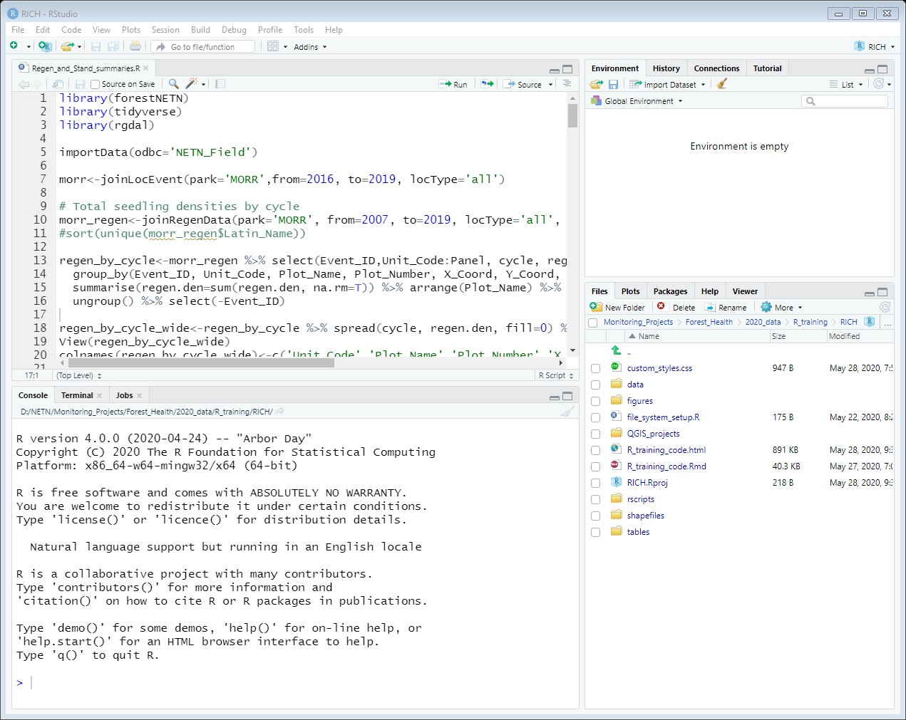
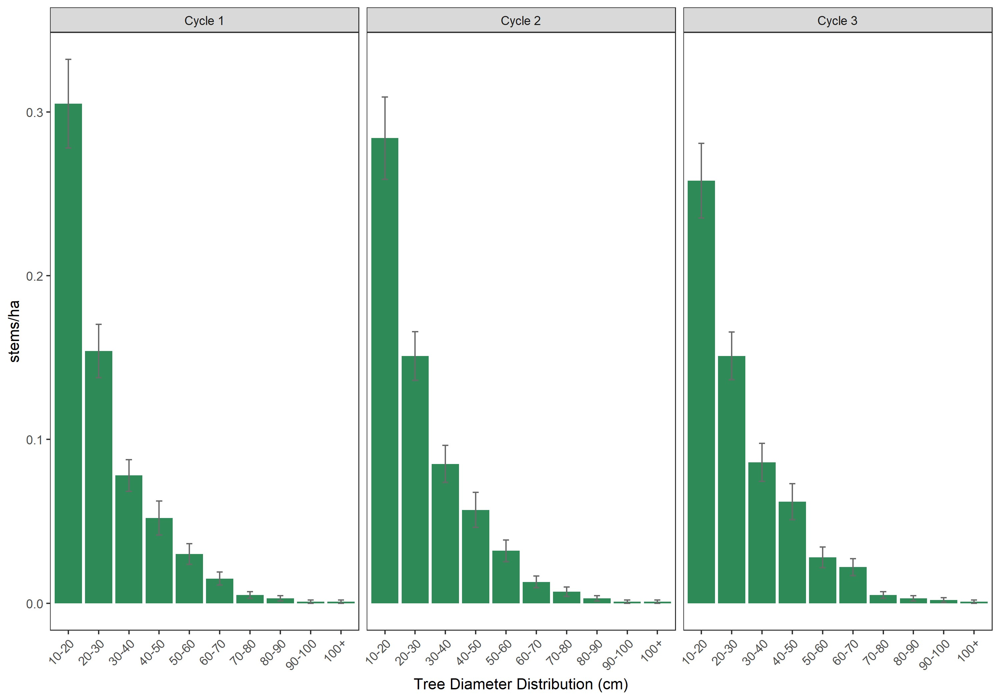

Forest Crew R Training
Day 1
Intro to R & RStudio
Introduction to R and RStudio
RStudio is an integrated development environment (IDE) that is a shell around the R program. Programming in the R language is made way easier by the advent of RStudio. When you open RStudio, you typically see 4 panes:

-
Source: the pane is the top left, and is where you can load and write scripts. When you’re ready to run the scripts you can
either highlight a line or lines and click “Run” or hit Ctrl+Enter. That essentially sends the code to R (which is living in the console), and you’ll typically see some form of output in the console. - RStudio color codes functions, datasets, quoted strings, numbers, comments, etc. differently, so it’s easier to read code. You can customize the layout and appearance of your code by clicking on Tools > Global Options. For example, I prefer a dark background, and use the Cobalt Editor Theme (under Appearance). Using that theme, comments are blue, numbers are magenta, quoted strings are green, etc.
- RStudio checks your code and updates the colors as you go. If, for example, you have an unclosed parentheses pair in your code, you will see Xs to the left of the line number and sometimes a little squiggle under a word. If you missed a closing quote, it will turn all of your following code the color of text (green in my case) until you close the quote. This makes it easier to spot where you missed the closing quote.
- Console: the pane in the bottom left is essentially where R lives. When you first open RStudio, the console will tell you the version of R that you’re running under the hood. You can type code directly in the console, or you can write scripts and send the code to the console.
-
Environment Window: this pane in the top right shows you the objects loaded in your environment that are accessible to you.
You can also click on objects and view them. - The history tab in this pane shows the code you’ve run in the current session, and can be a way to recover lines you ran but maybe overwrote/saved in your script (In other words, I rarely go here, but it’s saved me in a big way in the past!)
- Workspace: the pane in the bottom right shows the files within your working directory.
- The Plots tab will show plots that you create.
- The Packages tab allows you to turn on/off packages, and also view the help files within each package.
Useful keystrokes
Once you get in the swing of coding, you’ll find that minimizing the number of times you have to use your mouse will speed up your coding. RStudio has done a really good job of creating a ton of keyboard shortcuts to keep your hands on the keyboard instead of having to click through menus. One way to see all of the shortcuts RStudio has built in is to press Alt+Shift+K, and a window should appear with a bunch of shortcuts listed. These are also listed on RStudio’s IDE Cheat Sheet. The shortcuts I use the most often are listed below:- UNDO: Ctrl+Z
- REDO: Ctrl+Y
- Run highlighted code: Ctrl Enter
- Restart R Session: Ctrl Shift F10
- Move mouse to Source pane: Ctrl 1
- Move mouse to Console pane: Ctrl 2
- Insert pipe (%>%): Ctrl Shift M
- Insert “<-” : Alt -
- Zoom in to make text bigger: Ctrl Shift +
- Zoom out: Ctrl -
- Clear console: Ctrl L
Global Options
There are several settings in the Global Options that we’ll want to all have consistent. To make sure you have the correct settings, go to:
Tools > Global Options
Under the General tab, you should see that your R Version is [64-bit] and the version is R-4.0.0. If it’s not, you need to change it to that. Most settings can be whatever you prefer, including everything in the Appearance. The most important setting is to make sure you are not saving your history. When R saves your history, you start with the same workspace (including data loaded in the global environment), which seems like a good thing. However, the whole point of using R is that your code should return the same results every time you run it. Clearing your history every time you close RStudio forces you to test that your code is still returning the same results. If you happen to be working with huge datasets that take awhile to load and process, saving your history and RData are useful. Otherwise, clear your history by default by making sure Always save history (even when not saving .RData) is not checked. Also make sure the Restore .RData into your workspace at startup is unchecked. If you need to do that, you can run 1 line of code instead (load.Rdata(“filename.Rdata”)).Loading dependencies
While base R (everything that comes with the installation from CRAN) comes with a lot of useful functions, there are also a lot of great packages (aka libraries) out there that make data wrangling, analysis and plotting easier and more efficient. The packages we will rely on the most this season are:- dplyr: data wrangling functions including filtering (subsetting), arranging, and summarizing
- tidyr: reshaping data from long to wide and vice versa
- rgdal: to set coordinate systems and create shapefiles
- forestMIDN: for importing, joining, and summarizing data specific to MIDN
- devtools: required to install packages from github
Note that dplyr and tidyr are part of the tidyverse, which is a collection of a lot of really useful packages. Instead of only installing dplyr and tidyr individually, I recommend installing and loading the tidyverse, which will load those packages, along with several other useful packages.
To install packages, run the code chunk below:
install.packages(c("tidyverse", "rgdal", "devtools"))
devtools::install_github("katemmiller/forestMIDN")- Best practices for writing code are to load all of the packages you will use at the top of the script, so that it’s obvious early to another user if they need to install a package.
- You only need devtools to install the forestMIDN package on github. Once forestMIDN is installed, you don’t need to load devtools again.
- The tidyverse and rgdal can take awhile to install, but once they’re installed they are quick to load.
- Note the use of :: in the code chunk above. That’s another way to use functions in a package without loading the package. I only use this for packages like devtools, which I only use once in a script and I use it early. The :: symbol also comes in handy if you’re loading packages that have the same function name.
- To install a package, the name needs to be in quotes. To load the package via library(), you don’t quote the package name. Don’t ask me why…
To load the packages, run the code chunk below:
library(tidyverse)
library(rgdal)
library(forestMIDN)If you get an error that says there is no package called “x”, it means that package didn’t install properly, and you should try installing the package again.
A couple of tips for troubleshooting the forestMIDN package install.- Install Rtools for Windows 64-bit. The download page is here.
- If the error you’re getting is mentioning the package backports, try doing the following:
- Download the Windows Binaries for backports.
- Install backports from file in RStudio by going to Tools> Install Packages> Install From: Change the Install From option to “Package Archive File” and select backports_1.1.17.zip.
- Now try installing devtools and forestMIDN (install.packages(“devtools”); devtools::install_github(‘katemmiller/forestMIDN’))
Project and File Setup
Project and File Setup
First thing we’re going to do is start an R project for this training and set up the same file structure, which we’ll continue to use all summer. To set up a project, open R Studio and go to:File > New Project > New Directory > New Project
Find the directory you’re going to work from (other than avoiding saving to your desktop, anywhere is probably fine), and name the directory the R_training.
Now run the code chunk below to set up the same file structure.
# Step 1m
subfolders<-c("shapefiles", "QGIS_projects", "figures", "tables", "rscripts")
invisible(lapply(subfolders, function(x){
if(!dir.exists(x)){dir.create(paste(getwd(), x, sep = '/'))}
}))
if(!dir.exists("../data")){dir.create('../data')} # creating a data folder to store MIDN data tables if it doesn't already exist. - This approach makes sharing code easier, because the parent directly can vary across machines, as long as the project has the same subdirectory. Note the .. before /data. That tells R to go back one level in the parent directory, so you can store your data in one place and access it more easily in the future.
- Now that the data folder exists, download the MIDN data tables into the data folder. You can download the zip of all of the tables here. Once you have them unzipped in your data folder, we’ll be able to load and work with them in R.
- Once we start working on the park summaries, you’ll want to create a project for each park, using its 4-letter code. Once you create a project for a given park, run the first 2 steps in the code chunk above to set up the file system within.
- The last thing to mention here is the # in the code chunk above. The # comments out anything after it on the same line, so R knows not to try to run it. Commenting your code allows you to document what you’re doing, so it’s easier for someone else (or you 3 months later) to follow your code.
Getting Help
Getting Help
There are a number of options to get help with R. If you’re trying to figure out how to use a function, you can type ?function_name. For example ?plot will show the R documentation for that function in the Help panel. ?dplyr::filter works too, if you need to connect the package to the function (eg filter is also a function in stats, which is loaded as part of base R).
?plot
?dplyr::filterTo view all of the functions and links to their individual help files, type in help(package=packagename). For example, the code below will bring up the help files for the dplyr package.
help(package=dplyr)Online resources include Stackexchange, and Stackoverflow. For tidyverse-related packages/questions, there’s really good documentation for each package and function here. Google searches are usually my first step, and I include “in R” in every search related to R code.
Types of Data
Getting Started
Now we’re going to start coding. The best way to work through these lessons will be to take the code in the R_Training_code.html doc and copy it in to an R Script in your R_training.Rprj. Go ahead and go to File > New File > R Script (the white rectangle with a green Plus just below the word File will do the same.), and name the script Day_1.R, and save it to your rscripts subfolder. As you get more comfortable coding in R, try pushing yourself to type the commands, rather than copying and pasting. You’ll learn to code faster by typing, even if you’re just mimicking what you see in the training document.
Before we go too far, let’s make sure you have the tidyverse package loaded by running the code chunk below. This is the only dependency we’ll have for today’s code.
library(tidyverse)Types of Data
There are multiple types of data in R, including vectors, lists, arrays, matrices, dataframes and tibbles. We will spend most of our time with dataframes, and won’t worry about the other data types. Tibbles are the tidyverse version of a dataframe, but they’re essentially the same thing as a dataframe with a few added bells and whistles.
Dataframes are typically organized with rows being records and columns being variables (also called tidy data). The column variables can be numbers, text, or logical (TRUE/FALSE). Before we go any further, let’s create a simple dataframe to look at and perform some basic functions.Copy the code below into the console and run it.
df <- data.frame(plot = c(1, 2, 3, 4, 5, 'plot7'), #column for plot number
numtrees = c(24, 18, 17, 14, 31, 27),
numLive = c(21, 18, 16, 10, 29, 26),
domSpp = c('red_maple', 'willow_oak', 'loblolly_pine','sweet_gum','tulip_poplar', NA),
invasive_pres = c(TRUE, FALSE, FALSE, FALSE, FALSE, TRUE))
print(df)## plot numtrees numLive domSpp invasive_pres
## 1 1 24 21 red_maple TRUE
## 2 2 18 18 willow_oak FALSE
## 3 3 17 16 loblolly_pine FALSE
## 4 4 14 10 sweet_gum FALSE
## 5 5 31 29 tulip_poplar FALSE
## 6 plot7 27 26 <NA> TRUE- Text is called a string in R. If you have any text in a column, R automatically makes it a string.
- There are 2 types of strings in R: character (abbreviated chr) and factor.
- Older versions of R (i.e., R < 4.0) defaulted strings to factors. The newest R version defaults to characters, which saves us a lot of headaches (more on this later).
- When you’re dealing with strings, you usually have to put quotes around them. Note that 99% of the time, it doesn’t matter whether you use single or double quotes, as long as the thing you’re quoting is consistent.
- The pound sign (#) is used to tell R not to run the text following the #. This is also called commenting out text, and is a way to leave comments that won’t break your code.
Columns that are entirely numbers (blanks are okay too) are numeric. Integers are numeric whole numbers that will only return integers. That’s usually not a problem, but if it ever becomes a problem, the as.numeric() function fixes it. Logical is the last data type, and only consists of TRUE and FALSE.
Finally NA is a blank or missing value in your data. Note that the last row in domSpp is NA (stands for not available).Selecting rows and columns in R
There are 2 main approaches in base R for selecting/working with rows and columns- the $ and [ , ].- The $ is used to specify a dataframe name and one of its fields. For example df$plot is referring to the plot column in the df dataframe.
- The brackets [ , ] allow you to select columns and rows. The left side of the comma in brackets handles rows, and the right side of the bracket deals with columns, like: df[row numbers, column numbers].
To better understand this, run the code below:
df$plot # List the values within the column plot for the df dataframe
df[ , c('plot')] # Bracket version of the same thing
df[ , 1] # Bracket version of showing the first column, which is plot
df[2, 1] # Selecting 2nd row of first columnQuestion 1: How do you find the value of the 3rd row of domSpp? Answer is in the Answers tab.
Check and fix data structure
To check the structure of your data, run the code chunk below.
str(df) # to view how R is defining each column## 'data.frame': 6 obs. of 5 variables:
## $ plot : chr "1" "2" "3" "4" ...
## $ numtrees : num 24 18 17 14 31 27
## $ numLive : num 21 18 16 10 29 26
## $ domSpp : chr "red_maple" "willow_oak" "loblolly_pine" "sweet_gum" ...
## $ invasive_pres: logi TRUE FALSE FALSE FALSE FALSE TRUEhead(df) # to view the first 6 rows of df## plot numtrees numLive domSpp invasive_pres
## 1 1 24 21 red_maple TRUE
## 2 2 18 18 willow_oak FALSE
## 3 3 17 16 loblolly_pine FALSE
## 4 4 14 10 sweet_gum FALSE
## 5 5 31 29 tulip_poplar FALSE
## 6 plot7 27 26 <NA> TRUEnames(df) # to view the column names and their order## [1] "plot" "numtrees" "numLive" "domSpp"
## [5] "invasive_pres"Note the different data types of the columns. The plot column is called a chr, and not a number because of the last value. There’s also a blank in domSpp. Let’s modify the dataset so that plot reads in as numeric, and replace the missing value in domSpp with “white oak”.
Copy (or type) each section of code below and run in your console.
# The long way (note that I renamed the object here)
df2 <- data.frame(plot = c(1, 2, 3, 4, 5, 7),
numtrees = c(24, 18, 17, 14, 31, 27),
numLive = c(21, 18, 16, 10, 29, 26),
domSpp = c('red_maple', 'willow_oak', 'loblolly_pine','sweet_gum','tulip_poplar', 'white_oak'),
invasive_pres = c(TRUE, FALSE, FALSE, FALSE, FALSE, TRUE))
# A shorter way
df$plot[6] <- 7 #takes the 6th row of the plot column and changes it to 6
df$domSpp[6] <- "white_oak" #takes the 6th row of domSpp and replaces it with "white_oak"
# Another shorter way
df[6, c("plot")] <- 7 #takes the 6th row of the plot column and makes it 6
df[6, c('domSpp')] <- "white_oak" #takes the 6th row of the domSpp column and makes it "white_oak"
# Another shorter way
df[6, 1] <- 7 #takes the 6th row of the first column and makes it 6
df[6, 4] <- "white_oak" #takes the 6th row of the 4th column and makes it "white_oak"
# Even shorter-way
df[6, c(1, 4)]<-c(7, "white_oak") #Takes the 6th row and the first and 4th column, which happen to by plot and domSpp.
# Then the first column gets 7, and the 4th gets "white oak"This is merely to show that there are usually 5 different ways to do something in R, and the best way is the one you can get to work. At least that’s my philosophy for about 75% of the coding I do. The other 20% is about having code I can pick up a year later and still understand what I did. The last 5% is about coding for performance (e.g. if it’s a big dataset).
I should mention that when you use numbers instead of column names, your code is pretty fragile to changes in column order (eg, you drop a column). Row numbers are similarly fragile, if you reorder your data. It’s better to use names where possible and to use functions that use logic to find and replace records. For example:
df[is.na("domSpp")]<-"white_oak"Here R is looking for a value in the domSpp column that is NA (R’s way of calling it a blank value). Since there’s only 1, this works. If there were more than 1 NA, we’d need better logic to assign the proper value to each blank. We’ll go into more detail about this when we’re actually working with our forest data later.
And now, here’s the tidyverse way to replace the blank in df’s domSpp column with “white_oak”:
df$domSpp <- df$domSpp %>% replace_na("white_oak")We’ll talk more about pipes (%>%) later, but for now, just know that it’s taking the data on the left of the %>% and doing the thing on the right to it.
Finally, check whether plot is now reading in as numeric or still chr.
str(df) #still a char## 'data.frame': 6 obs. of 5 variables:
## $ plot : chr "1" "2" "3" "4" ...
## $ numtrees : num 24 18 17 14 31 27
## $ numLive : num 21 18 16 10 29 26
## $ domSpp : chr "red_maple" "willow_oak" "loblolly_pine" "sweet_gum" ...
## $ invasive_pres: logi TRUE FALSE FALSE FALSE FALSE TRUER still thinks plot is a char. The as.numeric function fixes the issue. If you didn’t fix the last record, the plot column will still convert to numeric, but the last value will be set to NA, and you’ll get a warning message: NAs introduced by coercion.
df$plot <- as.numeric(df$plot)
str(df)## 'data.frame': 6 obs. of 5 variables:
## $ plot : num 1 2 3 4 5 7
## $ numtrees : num 24 18 17 14 31 27
## $ numLive : num 21 18 16 10 29 26
## $ domSpp : chr "red_maple" "willow_oak" "loblolly_pine" "sweet_gum" ...
## $ invasive_pres: logi TRUE FALSE FALSE FALSE FALSE TRUEQuestion 2: How would you make numtrees an integer?
Data Summary I
Data Summary I
Using the df we created, let’s perform some basic summary statistics. Base R has a number of summary statistics built into it that are really useful, including mean, min, and max. These will come in handy when we start summarizing the data for our parks.
min(df$numtrees)## [1] 14max(df$numtrees)## [1] 31mean(df$numtrees)## [1] 21.83333The summary() function in R is another way to summarize your data. It knows the type of variable for each column, and gives you a meaningful summary of each type.
summary(df)## plot numtrees numLive domSpp
## Min. :1.000 Min. :14.00 Min. :10.00 Length:6
## 1st Qu.:2.250 1st Qu.:17.25 1st Qu.:16.50 Class :character
## Median :3.500 Median :21.00 Median :19.50 Mode :character
## Mean :3.667 Mean :21.83 Mean :20.00
## 3rd Qu.:4.750 3rd Qu.:26.25 3rd Qu.:24.75
## Max. :7.000 Max. :31.00 Max. :29.00
## invasive_pres
## Mode :logical
## FALSE:4
## TRUE :2
##
##
## You can also calculate new fields from existing fields in your data.
df$numdead <- df$numtrees - df$numLive # base R version
df <- df %>% mutate(numdead = numtrees - numLive) # tidyverse version. The mutate function is in the dplyr package of the tidyverse. It creates a new column in your dataframe, named numdead, and tells it to equal numtrees - numLive in the same way the base R version does. Mutate just spares you having to write df$ over and over.
Question 3: How would you calculate the percent of trees that are dead?
That’s the end of Day 1! Be sure to save your Day 1 R script, and complete the assigned tasks in the Assignments tab. Also, I provide one or a few ways to get the answer to the questions, but it’s likely you’ll come up with your own. That’s how coding in R works!
Lastly, don’t worry if you don’t understand everything. The key here was to expose you to the many different ways to work with and view data in R. We don’t expect you to understand/remember everything the first time (I was lost on how to use brackets [ , ] for a long time). Learning R requires repetition, and there will be a lot of repetition this week (and this season)!
Assignments
Please complete the assignments below. Note that the readings are to expose you to new topics, but you’re not expected to understand or digest 100% of the material.- R4DS: Chapter 5. Data transformations
- STAT545: Chapter 2. R basics and workflows
- STAT545: Chapter 5. Basic care and feeding of data in R
- STAT545: Chapter 6. Intro to dplyr
- Answer the questions for this day and review today’s code. Answers are in the Answers tab.
- Complete the Feedback form form by the end of the day
Day 2
Data Wrangling Part I
Before we get started, open the R_training.Rproj project in RStudio, start a Day_2.R script, and load the packages we’ll use today.
library(tidyverse)
library(forestMIDN)Read in and View Data
Let’s read in and explore some of the MIDN forest data tables. First, let’s load in our plant lookup table using base R functions to read in data.
Read in the Plant species lookup table (tlu_Plants.csv) from the MIDN database. Remember that the data folder is one level higher in your directory, so you need to use “..” to go backwards and find it.
plants <- read.csv("../data/tlu_Plants.csv")Note that there’s now an object in your global environment named plants. You can view the structure and the data by clicking on it in the global environment panel. You can also look at the data using a number of functions that work better for larger datasets (eg you don’t want to print the whole dataset to the console because there’s 1000+ records).
head(plants) # shows the first 6 lines of the dataframe, including the names of the columns
tail(plants[1:15]) # shows last 6 records in the dataframe (truncated for first 15 columns)
names(plants) # shows the column names of the dataframe
str(plants[1:15]) # shows the type of data in each column (truncated to the first 15 columns)
plants[1,] # returns the first row and all of the columns of the plants table
plants[1:4,c(9,10)] # returns the first four rows and the 9th and 10th column of the plants table
plants[1:4, c("Latin_Name", "Accepted_Latin_Name")] # does the same as the line above
View(plants) # opens a new tab of the data, where you can sort and filter to explore the data
sort(unique(plants$Latin_Name))[1:10] # makes list of all of the unique species in Latin_Name, sorts alphabetically, and gives first 10.
length(unique(plants$Latin_Name)) # number of unique rows in specified columnSelecting and Filtering Data
Now load the location table, which stores all of the plot-related information. Let’s do some row and column subsetting. Note that subsetting is a generic term for reducing the size of a dataset based on some defined conditions. Filtering typically means reducing rows. Selecting usually means reducing columns. I tend to use filter and subset interchangeably (sorry if that’s confusing).
# Loading the location table, which stores all of the plot-related information
loc <- read.csv("../data/tbl_Locations.csv")
# Reduce number of columns by selecting
# First see what the column names are
names(loc)
# Now type in the columns you want in quotes and separated by a comma
loc2 <- loc[ , c("Location_ID", "X_Coord", "Y_Coord", "Unit_ID", "Loc_Type", "Plot_Number")]
loc2b <- loc[ , c(1:3, 11, 12, 14)] # The same as above, but fragile to column order changing
# Reduce number of rows by filtering
# First see what the different types are
sort(unique(loc2$Loc_Type)) # BN, Deer, TEST, VS. We want VS
loc3 <- loc2[loc2$Loc_Type == "VS", ] # Subset data to only include "VS" location types
loc3b <- subset(loc2, Loc_Type == "VS") # Another base R approachNote the use of == to subset. In R, when you’re trying to match against something (like species == ‘white_oak’, or invasive_pres == TRUE), you use double == signs. When assigning something to an object (like mutate(newcolum = x + y)), you use a single = sign.
If you want to pull out all records that are NOT equal to a value, you use !=. That is, in R, ! means NOT. For example invasive_pres != TRUE means to pull in records where invasive_pres is NOT TRUE.
Now the tidyverse way to do steps to get from loc to loc3 in the previous code chunk using the select and filter command and pipes (%>%). The select function is used for columns and the filter command is used for rows. Notice the lack of quotes for the column names. One of the benefits of the tidyverse packages is that you don’t have to quote column names, whereas you do in base R. It saves typing time and was a conscious decision of the tidyverse developers.
loc3_tidy <- loc %>% select(Location_ID, X_Coord, Y_Coord, Unit_ID, Loc_Type, Plot_Number) %>%
filter(Loc_Type == "VS")Now let’s check our work to see if the three approaches to subsetting returned the same results.
nrow(loc3) #417
nrow(loc3b) #416
nrow(loc3_tidy) #416
table(complete.cases(loc3$Loc_Type)) # 1 FALSE means there's an NA in there
table(complete.cases(loc3b$Loc_Type)) # All TRUE
table(complete.cases(loc3_tidy$Loc_Type)) # All TRUENotice that the first subset we did for loc3 has 1 more row than the other 2. That’s because there’s an NA in the Loc_Type column, and it’s not automatically removed in the base R subset with brackets. We often have to tell base R what to do with NAs. A lot of functions have the option na.rm = TRUE to remove NAs as part of the function call. In the case of subsetting with brackets, you want to say take everything that is not NA. To do this run the code below.
loc3 <- loc2[loc2$Loc_Type == "VS" & !is.na(loc2$Loc_Type), ]
table(complete.cases(loc3$Loc_Type)) # Now all TRUE
nrow(loc3) # Now the same number of rows as the other 2.Filtering with multiple values
This section shows you how to filter rows based on multiple possible values. For the loc table, say we want to pull out Deer and BN (bonus) plots. The easiest way to do this is with %in% c(“value1”, “value2”), which basically says, match all records that have one of the values in the list.
table(loc2$Loc_Type) # using this to see the levels again
# Base R
loc_deer_BN <- loc2[loc2$Loc_Type %in% c("Deer", "BN"), ]
# Tidyverse
loc_deer_BN_tidy <- loc2 %>% filter(Loc_Type %in% c('Deer', 'BN'))
nrow(loc_deer_BN) #16
nrow(loc_deer_BN_tidy) #16The nice thing about using %in% is that it only pulls records that match exactly one of the values you give it, and you don’t have to worry about it also including NAs.
Question 4: How would you select only the plots in VAFO and HOFU from the loc table?
Question 5: How many plots are in VAFO and HOFU combined (based on loc table)?
Sorting Data
Next topic is sorting data in R, which you can do alphabetically or numerically. Typically when you read in a dataset in R, the order is exactly the order of that in the original file. There are multiple ways to sort data in R. Let’s start by sorting the loc table by Unit_ID and Plot_Number.
head(loc2) # check original before sorting
# Base R- I always forget the exact code and have to look it up.
loc2_sort <- loc2[order(loc2$Unit_ID, loc2$Plot_Number), ]
head(loc2_sort)
# Sort in reverse
loc2_sort_desc <- loc2[order(desc(loc2$Unit_ID), -loc2$Plot_Number), ]
head(loc2_sort_desc)
# desc is for text, - is for numbers
# Tidyverse version
loc2_sort_tidy <- loc2 %>% arrange(Unit_ID, Plot_Number)
head(loc2_sort_tidy)
#Tidyverse reverse sort
loc2_sort_tidy_rev <- loc2 %>% arrange(desc(Unit_ID), desc(Plot_Number))
head(loc2_sort_tidy_rev)Summarizing Data
The next topic is summarizing data using group_by() and summarize() functions from dplyr. The group_by() function allows you to specify the columns you want to summarize for each like row in the column. For example grouping by plot number, and summing the basal area for all trees on each plot. Another example is grouping by park (Unit_ID), and calculating the average tree basal area in a park.
To demonstrate how this works, let’s load in a test dataset.
regdf <- read.csv('../data/Regen_test_data.csv')
head(regdf)The regdf dataframe has seedling and sapling densities for the latest visit in each plot in HOFU, RICH and VAFO parks. The stock column is the stocking index, which is another measure of regeneration abundance. Let’s say we want to calculate the mean and standard error of each of the 3 regeneration metrics at the park level (ie Unit_Code).
reg_by_park <- regdf %>% group_by(Unit_Code) %>%
summarize(avg_seed_dens = mean(seed_den_m2),
avg_sap_dens = mean(sap_den_m2),
avg_stock = mean(stock),
se_seed_dens = sd(seed_den_m2)/sqrt(n()),
se_sap_dens = sd(sap_den_m2)/sqrt(n()),
se_stock = sd(stock)/sqrt(n()),
numplots = n()
)print(reg_by_park)## # A tibble: 3 x 8
## Unit_Code avg_seed_dens avg_sap_dens avg_stock se_seed_dens se_sap_dens
## <chr> <dbl> <dbl> <dbl> <dbl> <dbl>
## 1 HOFU 1.32 0.0155 4.76 0.563 0.00596
## 2 RICH 0.438 0.0733 4.60 0.125 0.0151
## 3 VAFO 0.473 0.0316 2.65 0.126 0.00934
## # ... with 2 more variables: se_stock <dbl>, numplots <int>In the code chunk above, we started with a seed_den_m2, sap_den_m2, and stock record for each plot (regdf). We then grouped by Unit_Code, which is the 4-letter park code, to come up with a mean, min, max and SE for each regen metric at the park level. Because there were only 3 parks in the dataframe, the resulting summary returned 3 results. Note that n() counts the number of rows within each group. By calculating sd(metric)/sqrt(n), we get the standard error.
Question 6: How would you calculate the min and max for seed_den_m2?
Saving data to file
The last thing today is how to write the data you’re working on to a file in your computer.The following code saves reg_by_park to file:
write.csv(reg_by_park, "../data/Regen_test_summary.csv")You should now see a new file in your data folder. Note that csv stands for comma separated values, and is a generic version of a spreadsheet that most programs can read. They’re lightweight, can open in most spreadsheet-like and text editing software. They don’t save any kind of formatting though (eg cell borders, bolded text, merged cells, etc). We’ll use the csv format to save all of our data to file, until we want to format it for publication, which we’ll use .xlsx for.
We’re not actually going to use that file for anything, so you can delete it now (either manually, or running the following code.)
file.remove("../data/Regen_test_summary.csv")Joining dataframes
Joining dataframes
Because our data are stored in a relational database, where plot-level data that never change (eg X, Y coords) are stored in 1 table (tbl_Location) and data related to each visit (also called events) are stored in other tables, we often have to join the tables together to work with them. To do that, we use a column that is found in each table called a primary key, that allows you to match the correct records in one table to the other. In our database, we typically use GUIDs (globally unique identifiers) as our keys. Let’s load some of our forest data tables, and use the primary keys to join them together.
loc<-read.csv("../data/tbl_Locations.csv")
event<-read.csv("../data/tbl_Events.csv")View(loc) #Location_ID
View(event) #Location_ID links to tbl_Location; Event_ID links other visit-level tables to this tableintersect(names(loc), names(event)) # way to check columns two tables have in common.## [1] "Location_ID" "Created_By" "Created_Date" "Updated_By" "Updated_Date"The primary key to join the loc and event table is Location_ID, which the intersect function also shows is a column they have in common. Notice that while the loc table has a lot of important information in it, there’s no information about when and how often a plot has been sampled. The event table, on the other hand has all of the dates a plot was sampled, but it doesn’t have the park or plot columns to determine which parks/plots those dates are associated with. We need to join the data from both tables (I’m using dataframe and table interchangeably here) together, to determine that.
As you read in the training materials yesterday afternoon, there are different flavors of joining tables. The main joins we use are- Left joins: take all of the records in the primary key on the left side dataframe (ie the first dataframe specified in the function) and tries to find one or more matching records in the right side dataframe (ie the second dataframe speficied). Any records in the left dataframe that don’t have a match in the right dataframe will still be included in the final result, but all of the columns coming from the right dataframe will be NA (blank). Records on the right dataframe without a match in the left dataframe are dropped from the result.
- Full joins: take all of the records from both sides of the join. Records on both sides without matches are included in the results with blanks in the cells that came from the table missing a match.
Let’s try this out on simple datasets first, then we’ll build up to our forest data. Another great example with visuals can be found here.
tree <- data.frame(plot = c("p1","p1","p1","p2","p2","p3","p4","p4"),
treenum = c(1, 2, 3, 11, 12, 21, 32, 33),
species = c("ACERUB" ,"PINTAE", "PINTAE", "QUEALB", "QUEALB",
"QUEPHE", "FAGGRA", "QUERUB"))
tree
tree_data <- data.frame(plot = c("p1", "p1", "p1", "p1", "p1","p1", "p2", "p2", "p5", "p7"),
year = c(2012, 2012, 2012, 2016, 2016, 2016, 2012, 2012, 2016, 2016),
treenum = c(1, 2, 3, 1, 2, 3, 11, 12, 51, 71),
DBH = c(12.5, 14.5, 16.1, 12.8, 14.9, 17.2, 28.1, 35.4, 36.1, 45.2))
tree_full_join <- full_join(tree, tree_data, by = c("plot", "treenum"))
tree_left_join <- left_join(tree, tree_data, by = c("plot", "treenum"))nrow(tree_full_join)## [1] 13nrow(tree_left_join)## [1] 11print(tree_full_join)## plot treenum species year DBH
## 1 p1 1 ACERUB 2012 12.5
## 2 p1 1 ACERUB 2016 12.8
## 3 p1 2 PINTAE 2012 14.5
## 4 p1 2 PINTAE 2016 14.9
## 5 p1 3 PINTAE 2012 16.1
## 6 p1 3 PINTAE 2016 17.2
## 7 p2 11 QUEALB 2012 28.1
## 8 p2 12 QUEALB 2012 35.4
## 9 p3 21 QUEPHE NA NA
## 10 p4 32 FAGGRA NA NA
## 11 p4 33 QUERUB NA NA
## 12 p5 51 <NA> 2016 36.1
## 13 p7 71 <NA> 2016 45.2print(tree_left_join)## plot treenum species year DBH
## 1 p1 1 ACERUB 2012 12.5
## 2 p1 1 ACERUB 2016 12.8
## 3 p1 2 PINTAE 2012 14.5
## 4 p1 2 PINTAE 2016 14.9
## 5 p1 3 PINTAE 2012 16.1
## 6 p1 3 PINTAE 2016 17.2
## 7 p2 11 QUEALB 2012 28.1
## 8 p2 12 QUEALB 2012 35.4
## 9 p3 21 QUEPHE NA NA
## 10 p4 32 FAGGRA NA NA
## 11 p4 33 QUERUB NA NANote the left join has fewer records, and doesn’t include p5 and p7 in the plot column from tree_data. There’s also no tree data for plots p3 and p4 because there wasn’t any data in the tree_data that matched. The full join includes plots and tree numbers from both tables, but there are NAs where there wasn’t a matching record in one of the tables.
Now we’re going to get more advanced and join the loc and event tables from our forest database.
# base R version
names(loc) # to help me pick the columns to include in the join
names(event)
loc_event_full <- merge(loc[ , c("Location_ID", "X_Coord", "Y_Coord", "Unit_ID", "Plot_Number", "Rejected")],
event[, c("Location_ID", "Event_ID", "Start_Date", "Event_QAQC")],
by = "Location_ID",
all.x = TRUE, all.y = TRUE)View(loc_event_full) # Now you can see all the times a plot has been sampled. You'll also see that some plots
# don't have sample dates. That's because the loc table includes plots that were rejected and never sampled.loc_event_left <- merge(loc[ , c("Location_ID", "X_Coord", "Y_Coord", "Unit_ID", "Plot_Number", "Rejected", "Loc_Type")],
event[, c("Location_ID", "Event_ID", "Start_Date", "Event_QAQC")],
by = "Location_ID",
all.x = TRUE, all.y = FALSE)
nrow(loc_event_full) # same number of rows because all events have a location record## [1] 1277nrow(loc_event_left) # same number of rows because all events have a location record## [1] 1277# tidyverse version
loc2 <- loc %>% select(Location_ID, X_Coord, Y_Coord, Unit_ID, Plot_Number, Rejected, Loc_Type)
event2 <- event %>% select(Location_ID, Event_ID, Start_Date, Event_QAQC)
loc_event_full_tidy <- full_join(loc2, event2, by = "Location_ID")
nrow(loc_event_full_tidy) # same number of rows because all events have a location record## [1] 1277loc_event_left_tidy <- left_join(loc2, event2, by = "Location_ID")
nrow(loc_event_left_tidy) # same number of rows because all events have a location record## [1] 1277Getting more advanced, let’s filter the loc table so that we only have active plots (ie no rejected plots), and only include plots that are part of the random sample design (Loc_Type == “VS”). Let’s also filter the event table to only include visits that are not QAQC visits (We resample 5% of plots each year to check the crew’s accuracy, but we generally don’t want to include them in analyses.). Next, join the resulting loc and event tables.
loc2 <- loc %>% select(Location_ID, X_Coord, Y_Coord, Unit_ID, Plot_Number, Rejected, Loc_Type) %>%
filter(Rejected == FALSE & Loc_Type == "VS")
table(loc2$Rejected)
event2 <- event %>% select(Location_ID, Event_ID, Start_Date, Event_QAQC) %>%
filter(Event_QAQC == FALSE)
table(event2$Event_QAQC)
locevent_full <- merge(loc2, event2, by = "Location_ID", all.x = TRUE, all.y = TRUE) # I learned merge first,
# and tend to use it more often, but full_join works here too.
locevent_left <- merge(loc2, event2, by = "Location_ID", all.x = TRUE, all.y = FALSE)
nrow(locevent_full) #1200
nrow(locevent_left) #1150View(locevent_full)
View(locevent_left)Notice that when you view locevent_full, there are events with NAs. That’s because there are sampling events for deer and BN plots that are in the event table, but don’t have matches in the location table, because we filtered out all non-VS plots in the loc table first. When you do the left join to get locevent_left, you don’t have those blanks, because you only matched the events that match the plots you care about in the loc table.
Question 7: How would you take only QA/QC events and join the loc table to QA/QC events only (this is a hard one, I know!)?
I should mention that this is pretty advanced stuff. I coded for years before attempting this in R. If you don’t quite understand the concepts, don’t worry. The forestMIDN package does most of the heavy lifting with joining tables for you! I’m just giving you a hint of what’s under the hood, so you understand what you’re doing when you use the functions. The key is to understand which function in that package you need to use for your summary, and how to ask it to give you the data you want. Tomorrow, we take a tour of the forestMIDN package.
That’s it for Day 2! Please save your script and complete the tasks in the assignments tab.
Assignments
Please complete the assignments below.
- R4DS: Chapter 12. Tidy data
- R4DS: Chapter 13. Relational data
- STAT545: Chapter 7. Single table dplyr functions
- STAT545: Chapter 15. Join two tables
- Answer the questions for this day and review today’s code
- Complete the Feedback form form by the end of the day
Day 3
Open the R_training.Rproj project, start a new Day_3.R script, and load the packages we’ll use today.
library(tidyverse)
library(forestMIDN)
library(rgdal) # for saving to shapefileforestMIDN package
forestMIDN Intro
The goals for today are to load and get to know the MIDN forest data, join MIDN tables, and play around with filtering/subsetting, mutating, and summarizing functions in the forestMIDN package.
To get started, copy the code chunk below to load the required packages and import the MIDN forest data.
# Load the required libraries
library(forestMIDN)
library(tidyverse)
importCSV("../data")After running, you should see a progress bar in the console, and “data import complete” when the import finishes. The MIDN data tables should also be listed in the global environment pane. Note that the loc object is the same one you loaded yesterday, same with plants. The importCSV function just does all of the loading and naming for you. The names of each table are used by functions in the forestMIDN package to join, filter and summarize the data.
To see all of the different functions in the forestMIDN package, run the code chunk below. You should see the functions listed in the Help tab in the Working Environment pane.
help(package=forestMIDN)I named the functions so that functions that start with join will join the tables you need to work with a certain type of data. So, joinLocEvent will join the plot data in the loc (tbl_Location) table with the visit data in the event (tbl_Events) table, which is the same thing you did in the previous section. The joinLocEvent() function also makes it easy to filter data at the same time, rather than having to run that separately.
Clicking on the function name in the Help pane will take you to the help information for that specific function. Most of the functions in the forestMIDN package have examples for how to use them at the bottom. If you find a function that doesn’t, let me know, and we can add one as a group!
Using forestMIDN functions
In the previous section, we joined only the loc and event records that were VS and active plots and non-QAQC events. The code chunk below does the same thing.
locevent2 <- joinLocEvent(park = "all", from = 2007, to = 2019, QAQC = FALSE, rejected = FALSE, locType = "VS", eventType = 'complete')
nrow(locevent2) #1149- this is 1 less than locevent from before, because eventType = 'complete'
# removes COLO-380-2018, which couldn't be fully sampled due to flooding from beaver dam.The defaults in each function also save you time. You can check the defaults by going to ?joinLocEvent. Under the Usage section, it shows you that the default for park is “all”, meaning all parks. The default year from is 2007, when monitoring began. The default for to is 2019, the latest year of sampling. Most importantly, the default for all of the functions in forestMIDN is to not include QAQC events (QAQC = FALSE), not include rejected plots (rejected = FALSE), and only include vital signs plots (locType = “VS”). You don’t have to specify the defaults in the functions, as R will automatically use them. For example, the previous code chunk returns the same as this code chunk, because of the defaults.
locevent2b <- joinLocEvent()This may seem kind of weird that you don’t have to put anything in the (), but it’s because R is plugging the default arguments into the function.
Let’s play a little more with the joinLocEvent() function. Say we only want to pull in the last 4 years of data (one complete cycle) for BOWA.
BOWA_locevent <- joinLocEvent(park = "BOWA", from = 2016, to = 2019)
# to = 2019 isn't needed, because it's the default, but it doesn't hurt either.
# locType = "VS" and QAQC = FALSE are also defaults, so you can stop including them
head(BOWA_locevent)Question 8: How many plots were sampled in APCO in 2018?
Once you start joining data with species included, there are more options in the functions to filter by species (eg native or exotic) or other useful variables (eg dead or live trees).forestMIDN Joining Functions
Tree Data
To work with tree data, you can use joinTreeData(). For example, if you want to know all of the dead trees in VAFO that were found in the most recent survey (ie, last 4 years), run the code chunk below:
VAFO_dead_trees <- joinTreeData(park = "VAFO", from = 2016, to = 2019,
status = "dead")View(VAFO_dead_trees)
length(unique(VAFO_dead_trees$Plot_Name)) The resulting dataframe isn’t super helpful for now, but we’ll make it more meaningful when we start summarizing data in the next section. Also note that the plots that don’t have any dead trees are still in the dataframe, but they have NAs in all of the measurement columns (eg Latin_Name, DBH, etc.). Most of the forestMIDN functions return records for all of the locType = “VS”, rejected = FALSE, and QAQC = FALSE by default, so you don’t accidentally summarize data without including 0s (eg To calculate % of plots with invasive species, you need to include all of the plots).
To pull out plots from the last 4 years with trees that are exotic species run the code below.
midn_exotic_trees <- joinTreeData(from = 2016, to = 2019, speciesType = 'exotic')
length(unique(midn_exotic_trees$Plot_Name)) #374 plots, which is the number of complete
# plots sampled between 2016-2019, not the number of plots with an exotic tree.Microplot Shrub Data
The shrub data collected in microplots can be joined and filtered using joinMicroShrubData(). For example, if we wanted native shrub % cover data from 2019 in FRSP, we’d run the following code chunk.
frsp_micro_shrub <- joinMicroShrubData(park = 'FRSP', from = 2016, speciesType = 'native')Stand Data
If we want to look at the stand data from, including stand structure, percent cover by strata, etc. (basically everything on the Stand tab in the database), use joinStandData(). The code below returns stand data collected in VAFO for last 4 years
vafo_stand <- joinStandData(park = "VAFO", from = 2016)
head(vafo_stand)Quadrat Data
The quadrat species % cover data are joined and filtered using joinQuadData(). Seedling-sized tree cover is not included in this function. Note the new_2019 field, which tells you if that species was first recorded in 2019 due to a protocol change. To get quadrat species data for all exotic species from all non-QAQC visits in HOFU, run the following code.
hofu_quad_exo <- joinQuadData(park = "HOFU", speciesType = 'exotic')View(hofu_quad_exo)Seedling and Sapling Data
While the seedlings and saplings are sampled in different subplots (quadrats vs microplots), it’s usually helpful to summarize them together. To look at the seedling and sapling data, use the joinRegenData(). For example, the code below gives you all of the regen data in stems/m2 from APCO in the most recent 4-year survey. Note the avg.cover and avg.freq columns here are for seedling-size cover of tree species, which differs from avg.cover and avg.freq in the joinQuadData(), which lumps cover of all life stages.
apco_regen <- joinRegenData(park = "APCO", from = 2016)
head(apco_regen)You can also change the units from stems/m2 (default) to stems/ha.
apco_regen_ha <- joinRegenData(park = "APCO", from = 2016, units='ha')
head(apco_regen_ha)Coarse Woody Debris Data
The joinCWDData puts the CWD data together and calculates CWD volume in m3/ha.
midn_cwd <- joinCWDData(park = 'all', from = 2007, to = 2010)
# If you get a "Factor 'Latin_Name' contains implicit NA..." warning, ignore it for now.forestMIDN Summary Functions
Make plot-level species list
The makeSppList() function will generate a plot-level species list and show all of the metrics that species had a record for. For example, to get a species list for all plots sampled in 2019 in APCO, run the code below.
apco_spp <- makeSppList(park='APCO', from = 2019, to = 2019)For exotic-only species, run the code below.
apco_exospp <- makeSppList(park="APCO", from = 2019, to = 2019, speciesType = 'exotic')Tree diameter distribution
We often want to look at the distribution of tree sizes over time to see how forests are changing over time. The figure below is for ROVA. Summarizing the tree data by size classes is tedious. The sumTreeDBHDist() does the heavy lifting for you. You can summarize by density (number of tree stems), or by basal area. You can also choose live, dead or all tree status, and native, exotic, or all species. The resulting dataframe has a record for each plot (and visit, if you include a year range that covers more than one visit), wit the density or basal area in each 10-cm size class. We’ll show you how to make the figure below on Day 4.

# Generate tree diameter distribution for live tree density in RICH in most recent 4-year cycle.
RICH_live_dist <- sumTreeDBHDist(park="RICH", status="live", units = "density", from = 2016, to = 2019)
# Generate tree diameter distribution for native tree density in RICH in most recent 4-year cycle.
RICH_native_dist <- sumTreeDBHDist(park="RICH", speciesType="native", units = "density", from = 2016, to = 2019)Question 9: Which plot in FRSP has the highest density of live trees in the 90-99.9cm size class for any year?
Data Wrangling Part II
Data Wrangling Part II- Reshaping Data
Another important concept in data wrangling is reshaping data. Datasets are usually described as long, or wide. The long form, which most of our MIDN forest data start as, consists of each row being an observation (ie if there are 3 visits to a plot, there are 3 rows in the data), and each column being a variable (eg. plot, cycle, numseeds). In summary tables, we often want to reshape the data to be wide, so that there’s only one row per plot, a column for each cycle, and the numseeds as the value in the cell.
regen_long <- data.frame(plot = c("p1","p1","p1","p2","p2","p2","p3","p3","p3","p4","p4"),
cycle = c("c1","c2","c3","c1","c2","c3","c1","c2","c3","c1","c2"),
numsds = c(1,4,5,3,2,6,4,9,10,3,1))
print(regen_long)## plot cycle numsds
## 1 p1 c1 1
## 2 p1 c2 4
## 3 p1 c3 5
## 4 p2 c1 3
## 5 p2 c2 2
## 6 p2 c3 6
## 7 p3 c1 4
## 8 p3 c2 9
## 9 p3 c3 10
## 10 p4 c1 3
## 11 p4 c2 1To make this wide, we’re essentially going to make a pivot table using functions in tidyr. There are two functions you can use. The spread() function was original to tidyr, is what I know the best, and still performs faster on larger datasets than pivot_wider(), the replacement for spread. I show both options, so you can use whichever function makes the most sense to you.
regen_wide <- regen_long %>% spread("cycle", "numsds") #retired spread function
regen_wide## plot c1 c2 c3
## 1 p1 1 4 5
## 2 p2 3 2 6
## 3 p3 4 9 10
## 4 p4 3 1 NAregen_wide2 <- regen_long %>% pivot_wider(names_from = "cycle", values_from = "numsds") #replacement in tidyr
regen_wide2## # A tibble: 4 x 4
## plot c1 c2 c3
## <chr> <dbl> <dbl> <dbl>
## 1 p1 1 4 5
## 2 p2 3 2 6
## 3 p3 4 9 10
## 4 p4 3 1 NANote the NA in c3 for p4. That’s because the long version didn’t have a data point for that combination. The tidyr package will assign NA when reshaping for combinations not represented in the original dataset. For plots that haven’t been sampled in the 3rd cycle in this scenrio, NA makes sense. However, say p4 had been sampled in c3, and there just weren’t any seedlings found. You can tell tidyr to fill blanks with 0. This is a handy feature, but it’s not to be abused. You should always think carefully before filling blanks with 0s.
regen_wide_fill0 <- regen_long %>% spread("cycle", "numsds", fill=0)
regen_wide_fill0## plot c1 c2 c3
## 1 p1 1 4 5
## 2 p2 3 2 6
## 3 p3 4 9 10
## 4 p4 3 1 0regen_wide2_fill0 <- regen_long %>% pivot_wider(names_from = "cycle", values_from = "numsds", values_fill=0)
regen_wide2_fill0## # A tibble: 4 x 4
## plot c1 c2 c3
## <chr> <dbl> <dbl> <dbl>
## 1 p1 1 4 5
## 2 p2 3 2 6
## 3 p3 4 9 10
## 4 p4 3 1 0Now, say you want to take the wide version of the dataframe and make it long, so that you have a row for every time a plot has been sampled, a column for cycle, and a column for the numseeds. You can use gather(), the original tidyr function, or pivot_longer(), the new one.
regen_long2 <- regen_wide_fill0 %>% gather("cycle", "numseeds", -plot)
regen_long2## plot cycle numseeds
## 1 p1 c1 1
## 2 p2 c1 3
## 3 p3 c1 4
## 4 p4 c1 3
## 5 p1 c2 4
## 6 p2 c2 2
## 7 p3 c2 9
## 8 p4 c2 1
## 9 p1 c3 5
## 10 p2 c3 6
## 11 p3 c3 10
## 12 p4 c3 0names(regen_wide_fill0)## [1] "plot" "c1" "c2" "c3"regen_long2b <- regen_wide_fill0 %>% pivot_longer(cols=c(c1, c2, c3), names_to = "cycle", values_to = "numseeds")Both functions above are keeping a plot column, and to take the columns c1, c2, and c3 and put their names into a new cycle column, and their values into a new numseeds column. Because we used the wide dataset where NAs were filled with 0, cycle 3 for plot p4 now has 0 instead of NA.
This approach comes in handy when you want to generate a consistent species list for each plot and show 0s where it didn’t occur. For example, say we want a list of all all species found in GETT in 2019 and we want to calculate the number of plots each of those species occurred in.
gett_exospp <- makeSppList(park = "GETT", from = 2019, to = 2019, QAQC=FALSE)
# Need to add a column that says the species is present.
gett_exospp$spp_pres<-1
gett_exo_wide <- gett_exospp %>% select(Plot_Name, Latin_Name, spp_pres) %>% # helps to take only the columns you're interested in
arrange(Latin_Name, Plot_Name) %>% #arrange is piped here so columns will be alphabetical
pivot_wider(names_from = "Latin_Name",
values_from = "spp_pres",
values_fill = 0) %>%
arrange(Plot_Name)
head(gett_exo_wide)
#Now to make the the long version of wide, we species we didn't find on a plot are not included and have a 0.
gett_exo_long <- gett_exo_wide %>% pivot_longer(-Plot_Name,
names_to = "Latin_Name",
values_to = "Present") %>%
arrange(Plot_Name, Latin_Name)
head(gett_exo_long)For the pivot_longer, there are a lot of columns that I want to put into the new Latin_Name column. Instead of having to list every single column, I’m telling R to use all but Plot_Name column. Then I sorted by Plot_Name and Latin_Name using arrange.
Question 10: How would you create a wide matrix for FRSP plots in 2019 that has plots for rows, and exotic species as columns?
Saving data to Shapefile
Many of the metrics we’re going to summarize will be saved as shapefiles to map in QGIS. The process is relatively straightforward. The keys are to have the X, Y Coordinates included in your final summary (may have to do some table joining to get them back), and to know which Coordinate Reference System to specify (abbreviated CRS). MIDN covers 2 UTM Zones, which can be extra tricky. The datum and projection for each park are listed below.
- NAD83 UTM Zone 17N: APCO, BOWA
- NAD83 UTM Zone 18N: COLO, FRSP, GETT, GEWA, HOFU, PETE, RICH, SAHI, THST, VAFO
Most of the major coordinate systems have a registered EPSG Code assigned to it, including ours. Using the EPSG code is the fastest way to assign the coordinate system for our shapefile. For APCO and BOWA, the EPSG Code is 26917. For the other parks it’s 26918 (notice the last digit is the only difference, and matches the UTM Zone above).
To start out, let’s use gett_exo_wide from the previous section to create our first shapefile. The first thing we need to do is add the X, Y Coordinates back into the dataset.
head(gett_exo_wide) # Created at the end of Data Wrangling Part II.
gett_19 <- joinLocEvent(park = "GETT", from = 2019, to = 2019)
gett_for_shp <- merge(gett_19[ , c("Plot_Name", "X_Coord", "Y_Coord")], gett_exo_wide, by = "Plot_Name",
all.x = TRUE, all.y = TRUE)
# Note that if we had used the code below to generate gett_exo_wide, the coordinates would already be in there
gett_exo_wide <- gett_exospp %>% select(Plot_Name, X_Coord, Y_Coord, Latin_Name, spp_pres) %>%
arrange(Latin_Name, Plot_Name) %>%
pivot_wider(names_from = "Latin_Name",
values_from = "spp_pres",
values_fill = 0) %>%
arrange(Plot_Name)Now that our dataframe has the GPS Coordinates, we need to tell R that these columns are X Y coordinates, and then tell R what the projection and datum are. The rgdal package has the functions to do this.
head(gett_exo_wide)
# Step 1: Create spatial object by specifying the coordinates
coordinates(gett_exo_wide) <- ~X_Coord + Y_Coord
names(gett_exo_wide[1:5])
plot(gett_exo_wide) # These points now plot in space
# Step 2: Define the coordinate system
proj4string(gett_exo_wide) <- CRS("+init=epsg:26918")
# Step 3: Write the spatial object to a shapefile
writeOGR(gett_exo_wide, dsn = "./shapefiles", layer = "GETT_exo_2019", driver = "ESRI Shapefile")- First notice that after you assign the coordinates in Step 1, the X_Coord and Y_Coord columns disappear from your dataframe. If you try to run that line of code again, you’ll get an error because those columns aren’t in the dataframe anymore. No need to fret. You’ve just created a spatial object, and the coordinates are stored in a different slot than the data.
- In the second step, we’re telling R that the datum and projection (in proj4 format) for our spatial dataset is the EPSG Code 26918 (code for NAD83, UTM Zone 18N).
- Finally, we’re using the writeOGR command to output to a shapefile. The dsn is the location you’re saving the shapefile too.
- Notice that we’re using ./shapefiles, which is a folder within the project we created on day 1. Note that the layer name is what the shapefile will be called. Column names usually end up getting abbreviated (don’t worry if you get a warning message).
- Finally, writeOGR by default will not allow you to overwrite an existing file. While it’s safe to have that as a default, sometimes you want to overwrite shapefiles. To do that, add overwrite_layer=TRUE to the function.
That’s it for Day 3. Oofta- we covered a lot of ground the last 2 days! Please save your work, answer the questions for today, and complete the feedback form.
Assignments
Please complete the assignments below.- R4DS: Chapter 3. Data visualization
- Mastering Software Development in R: Chapter 4.1. Basic plotting with ggplot2
- Mastering Software Development in R: Chapter 4.2. Customizing ggplot2 plots
- Answer the questions for this day and review today’s code. Answers are in the Answers tab.
- Complete the Feedback form form by the end of the day
Day 4
plotting with ggplot2
Open your project, make a new Day 4 script, and load the packages we’ll use today. We also need to reinstall the latest version of forestMIDN, which fixes bugs we found on Tuesday.
library(tidyverse)
devtools::install_github("katemmiller/forestMIDN") #press enter- don't need to update other packages
library(forestMIDN)To get started with ggplot2, we need to make a dataset to plot. Instead of making up a simple dataset, let’s use what we’ve learned to make a real dataset from MIDN forest data. Let’s start with a plot of the mean regeneration density by size class for the most recent 4-years at GETT. Let’s also only include species that make it into the canopy (e.g., no pawpaw). We specify this by using canopyForm = “canopy”.
gett_regen <- joinRegenData(park = "GETT", from = 2016, to = 2019, canopyForm = "canopy")
head(gett_regen) # this dataframe includes species, so there are multiple rows per plot.
# We need to group_by Plot_Name, and sum seedling densities to get plot-level seedling densities.
gett_regen2 <- gett_regen %>% group_by(Plot_Name) %>%
summarize(seed15_30 = sum(seed15.30),
seed30_100 = sum(seed30.100),
seed100_150 = sum(seed100.150),
seed150p = sum(seed150p),
sapling = sum(sap.den)) %>%
arrange(Plot_Name)
# This is the shortest way to get a dataset that has a mean seedling density for each size class and a se for each size class.
# Note we want to make this long, so every plot has each of the size classes
gett_regen_long <- gett_regen2 %>% pivot_longer(-Plot_Name, names_to = "size_class", values_to = "density")
# Now we calculate the mean and se for each size class at the park level
gett_stats <- gett_regen_long %>% group_by(size_class) %>%
summarize(mean_dens = mean(density),
se_dens = sd(density)/sqrt(n()))
# We have our dataset to plot. The pros with using ggplot are that you can get a plot with very little work. The cons are that as soon as you want to change something, like removing the grid lines, customizing a legend, changing the font size, etc., it’s quite tedious to do. Using the default formatting that comes with ggplot, let’s plot the gett_regen2 dataset.
The first step in ggplot is to specify the data set and the x and y (and grouping, if you have any) values with the ggplot() function. After you set that up, you have to decide what kind of plot you want to us. The most common ones I use are:- geom_bar is a bar chart
- geom_point plots points
- geom_line plots lines
- geom_boxplot is for boxplots
- geom_errorbar is a bar chart
As long as the mapping is the same (eg x/y values fit on the plot), you can add multiple geoms, such as points and lines that connect the points, or geom_errorbar to the geom_bar. You can even include different datasets. Just know that the ranges of the x and y axis default to the x and y you set in ggplot(). You can manually change the range of an axis to fix that, but it requires more tinkering. You can also keep adding things to the object with +.
gett_base <- ggplot(data = gett_stats, aes(x = size_class, y = mean_dens))
# Make a point plot
gett_base + geom_point()
# Make a bar chart
gett_bar <- gett_base + geom_bar(stat = 'identity')
gett_bar
# Add error bars to the previous bar chart
gett_bar + geom_errorbar(aes(ymin = mean_dens - se_dens, ymax = mean_dens + se_dens))+
labs(x = "Regeneration Size Class", y = "Stems per sq.m")
Note that the x-axis plots the size classes alphabetically instead of from small to big size classes. To fix this (this is where ggplot starts to get fiddly), we want to make the size_class column an ordered factor, and we set the order the levels.
gett_stats$size_class_fact <- ordered(gett_stats$size_class,
levels = c('seed15_30', 'seed30_100', 'seed100_150', 'seed150p', 'sapling'))
gett_bar2 <- ggplot(data = gett_stats, aes(x = size_class_fact, y = mean_dens))+
geom_bar(stat = 'identity')+
geom_errorbar(aes(ymin = mean_dens - se_dens, ymax = mean_dens + se_dens))+
labs(x = "Regeneration Size Class", y = "Stems per sq.m")
gett_bar2
That’s more like it, but I still don’t like how the figure looks. For example, I don’t like the gridlines in the figure. Those settings are buried in theme(), and to change it you need to +theme(change_settings_here)
gett_bar2 + theme(panel.grid.minor = element_blank(),
panel.grid.major = element_blank())
That’s a little better, but I still don’t like it. And, I never remember exactly what I need to type to remove the gridlines, take the grey fill off the background, etc. So I made my own theme that does all of that in the forestMIDN package, called theme_FVM.
gett_bar2+theme_FVM()
Much better! But, I still prefer the bars be a different color than grey. Let’s fill the bars with a nice blue color. I’ll start over on the code too, so you can see it all together. Note the use of “#5E79A8” to the fill bar color. I used the hex code for a blue-grey color I like. Hex codes are a universal color code that specify the intensity of red, green, blue, and makes it easier to use the same color across multiple programs. If you want to pick your own color, you can use HTML Color Codes website to pick a color and see the code. I also like the color picker, mixer and shades in w3schools.com.
gett_final <- ggplot(data = gett_stats, aes(x = size_class_fact, y = mean_dens))+
geom_bar(stat = 'identity', fill = "#5E79A8")+
geom_errorbar(aes(ymin = mean_dens - se_dens, ymax = mean_dens + se_dens))+
labs(x = "Regeneration Size Class", y = "Stems per sq.m")+
theme_FVM()
gett_final
Question 11: Take the gett_final graph and make 2 more changes to it. For example, make the line width on the error bars bigger, change the font size of the axis text bigger, tilt the x-axis labels (eg seed15_30) 45 degrees, rename x-axis labels, etc.
Summarizing MIDN forest data M1-9
It’s time to put everything you just learned to work! Here I’ve written the code for RICH that compiles the first 4 metrics that each of you will work on with your parks. We’re going to go through each metric line by line to help you understand the process. Then you’ll take this code and run it for your parks.
Before we start, let’s restart our R session to clear our history and global environment by pressing CTRL + SHFT + F10. You essentially just closed and reopened RStudio, without having to do it physically. So, we’ll need to load the packages and import the data again.
library(tidyverse)
library(forestMIDN)
library(rgdal)
importCSV("../data")1. Regeneration by size class map
This section is devoted to summarizing regeneration density by size class, so we can map them as pie charts in QGIS. We only need the last 4 years of visits, only want native species (we don’t consider exotic species part of healthy forest regeneration layer), and only want species that can make it into the canopy.
Note that after just about every line I run, I usually type head(new_dataframe_name) in the console below to check that it looks right. View(new_dataframe_name) is also a common practice for me. I won’t add those here, but you should be doing that on your own throughout.
RICHreg_4yr <- joinRegenData(park = "RICH", speciesType = "native", canopyForm = "canopy",
units = "sq.m", from = 2016, to = 2019)
names(RICHreg_4yr)
sort(unique(RICHreg_4yr$Year))
length(unique(RICHreg_4yr$Plot_Number)) # 32-Good to know how many plots there are to check against as you're summarizing
RICHreg_4yr_sum <- RICHreg_4yr %>% group_by(Unit_Code, Plot_Name, Plot_Number, X_Coord, Y_Coord) %>%
summarise(sd15_30 = sum(seed15.30, na.rm = TRUE),
sd30_100 = sum(seed30.100, na.rm = TRUE),
sd100_150 = sum(seed100.150, na.rm = TRUE),
sd150p = sum(seed150p, na.rm = TRUE),
sap = sum(sap.den, na.rm = TRUE))In general, it’s good practice to hold on to the Event_ID and Location_ID guids throughout your summary process, in case you need to join tables later. They’re the safest columns to merge/join. You can either include them in your group_by() statement (like I did), or include them in your summarize() statement by including (Location_ID = first(Location_ID), Event_ID = first(Event_ID)). Any column in the original dataset that isn’t in the group_by() or recalculated in summarize() will be dropped in the newly created dataframe. I’m not going to merge this dataframe with another one before I save the output, so I didn’t include the guids here. I did leave the X, Y Coordinates in here because we’re going to save the output for this section as a shapefile.
You may notice the na.rm=T in sum(). Most of the functions in forestMIDN will have a 0 where there wasn’t a seedling or sapling. But, if we didn’t include na.rm = TRUE and there was an NA in that column the sum() would fail and return an error. In general R makes you have to think about how to deal with NAs, rather than assuming what to do with them (it’s annoying, but for the best).
nrow(RICHreg_4yr_sum) # 32 is what we're looking for, since there are 32 plots in RICH.## [1] 32Now all we need is to make this a spatial object and save as a shapefile
coordinates(RICHreg_4yr_sum) <- ~X_Coord + Y_Coord
proj4string(RICHreg_4yr_sum) <- CRS("+init=epsg:26918")
writeOGR(RICHreg_4yr_sum, dsn = "./shapefiles", layer = "RICH_regen_by_size_class_M1", driver = "ESRI Shapefile")2. Tree diameter distribution figure Updated 6-23-20
Now I’m going to show you all the code to produce the tree diameter distribution plot from Day 3 > forestMIDN > Tree diameter distribution. The dataset we need for the figure will have a row for each cycle (1-3 cycles) plus the last 4 years of data (if that differs from cycle 3 year range) and size_class combination, a column for average density by cycle/size class, standard error for each cycle/size class and the number of plots used to calculate the average and standard error.
First we need to compile the tree diameter distribution data using sumTreeDBHDist(). I’m first going to compile the data for cycle 1 to 3, then I’ll compile the last 4 years (2016-2019), which are across cycle 3 and 4.
# In RICH, cycle 1 = 2007-2010, cycle 2 = 2011-2014, cycle 3 = 2015-2018, last 4 years is 2016-2019
RICH_tree_dist_c1.3 <- sumTreeDBHDist(park = "RICH", status = 'live',
units = 'density', from = 2007, to = 2018)
length(unique(RICH_tree_dist_c1.3$Plot_Name)) # Should be 32
RICH_tree_dist_4yr <- sumTreeDBHDist(park = "RICH", status = 'live',
units = 'density', from = 2016, to = 2019)
length(unique(RICH_tree_dist_4yr$Plot_Name)) # Also 32, great.
# Change cycle value to "last4yr"
RICH_tree_dist_4yr <- RICH_tree_dist_4yr %>% mutate(cycle = "last4yr")
head(RICH_tree_dist_c1.3)
head(RICH_tree_dist_4yr)Now we’re going to combine the c1.3 and 4yr datasets, so I can prep all of the data for plotting at the same time. Both datasets have the same columns, so I can combine the two datasets using rbind(), which binds two datasets based on matching their column names.
RICH_tree_dist <- rbind(RICH_tree_dist_c1.3, RICH_tree_dist_4yr)
head(RICH_tree_dist)
table(RICH_tree_dist$cycle)RICH_tree_dist now has a record for each plot and cycle in RICH. Now we need to reshape to be long, so that each plot visit has a row for each of the 10 size classes. Then we will group by cycle and size class to calculate average stem density and standard error of stem density for each cycle and size class.
RICH_tree_dist_long <- RICH_tree_dist %>% select(Plot_Name, cycle, d10_19.9:d100p) %>%
pivot_longer(cols = c(d10_19.9:d100p), names_to = "size_class",
values_to = "density")
RICH_tree_dist_sum <- RICH_tree_dist_long %>% group_by(cycle, size_class) %>%
summarize(avg_dens = mean(density, na.rm = TRUE),
se_dens = sd(density, na.rm = TRUE)/
sqrt(sum(!is.na(density))),
num_plots = sum(!is.na(density)))
sort(unique(RICH_tree_dist_sum$size_class))
head(RICH_tree_dist_sum)The size class order sorts alphabetically, which isn’t the order we want. We need to tell R what order to sort the size classes.
RICH_tree_dist_sum$size_class <- ordered(RICH_tree_dist_sum$size_class,
levels = c("d10_19.9", "d20_29.9", "d30_39.9",
"d40_49.9", "d50_59.9", "d60_69.9",
"d70_79.9", "d80_89.9", "d90_99.9",
"d100p"))
levels(RICH_tree_dist_sum$size_class) #Size classes are in the order we want them now## [1] "d10_19.9" "d20_29.9" "d30_39.9" "d40_49.9" "d50_59.9" "d60_69.9"
## [7] "d70_79.9" "d80_89.9" "d90_99.9" "d100p"# Now we need to arrange the data using the new ordered factor levels
RICH_tree_dist_sum <- RICH_tree_dist_sum %>% arrange(cycle, size_class)head(RICH_tree_dist_sum)Now to plot the results, with each cycle getting it’s own plot using the facet_wrap function in ggplot2.
# Set up labels for facet wrap
cycle_names<-c('Cycle1' = "Cycle 1", 'Cycle2' = 'Cycle 2', 'Cycle3' = 'Cycle 3', 'last4yr' = "Last 4 yrs: 2016-2019")
# Make ggplot graph
tree_dist_plot <- ggplot(data = RICH_tree_dist_sum, aes(x = size_class, y = avg_dens))+
geom_bar(stat = 'identity', fill = '#2E8B57')+ #hexcode for SeaGreen
geom_errorbar(aes(ymin = avg_dens - se_dens,
ymax = avg_dens + se_dens, x = size_class),
color = "#696969", #hexcode for DimGrey)
width = 0.2, position = position_dodge(0.9))+
facet_wrap(~cycle, ncol=4, labeller = as_labeller(cycle_names))+
labs(x = "Tree Diameter Distribution (cm)", y = "stems/ha")+
theme(axis.text.x = element_text(angle = 45, hjust = 1))+
scale_x_discrete(labels= c('10-20', '20-30', '30-40','40-50',
'50-60','60-70','70-80',
'80-90','90-100','100+'))+
theme_FVM()
print(tree_dist_plot)
Now save ggplot graph as jpeg using the ggsave function from ggplot2.
ggsave("./figures/RICH_Tree_diam_dist_M2.jpg", tree_dist_plot, dpi = 300,
width = 10, height = 7, units = 'in')2. Tree diameter distribution figure for NCBN park Updated 6-23-20
# In SAHI, cycle 1 = 2008-2011, cycle 2 = 2012-2015, cycle 3 = 2016-2019
SAHI_tree_dist <- sumTreeDBHDist(park = "SAHI", status = 'live',
units = 'density', from = 2007, to = 2019)
length(unique(SAHI_tree_dist$Plot_Name)) # Should be 4
SAHI_tree_dist_long <- SAHI_tree_dist %>% select(Plot_Name, cycle, d10_19.9:d100p) %>%
pivot_longer(cols = c(d10_19.9:d100p), names_to = "size_class",
values_to = "density")
SAHI_tree_dist_sum <- SAHI_tree_dist_long %>% group_by(cycle, size_class) %>%
summarize(avg_dens = mean(density, na.rm = TRUE),
se_dens = sd(density, na.rm = TRUE)/
sqrt(sum(!is.na(density))),
num_plots = sum(!is.na(density)))
SAHI_tree_dist_sum$size_class <- ordered(SAHI_tree_dist_sum$size_class,
levels = c("d10_19.9", "d20_29.9", "d30_39.9",
"d40_49.9", "d50_59.9", "d60_69.9",
"d70_79.9", "d80_89.9", "d90_99.9",
"d100p"))
levels(SAHI_tree_dist_sum$size_class) #Size classes are in the order we want them now
# Now we need to arrange the data using the new ordered factor levels and are ready to plot
SAHI_tree_dist_sum <- SAHI_tree_dist_sum %>% arrange(cycle, size_class)
# Set up labels for facet wrap
cycle_names<-c('Cycle1' = "Cycle 1", 'Cycle2' = 'Cycle 2', 'Cycle3' = 'Cycle 3')
# Make ggplot graph
tree_dist_plot <- ggplot(data = SAHI_tree_dist_sum, aes(x = size_class, y = avg_dens))+
geom_bar(stat = 'identity', fill = '#2E8B57')+ #hexcode for SeaGreen
geom_errorbar(aes(ymin = avg_dens - se_dens,
ymax = avg_dens + se_dens, x = size_class),
color = "#696969", #hexcode for DimGrey)
width = 0.2, position = position_dodge(0.9))+
facet_wrap(~cycle, ncol=3, labeller = as_labeller(cycle_names))+
labs(x = "Tree Diameter Distribution (cm)", y = "stems/ha")+
theme(axis.text.x = element_text(angle = 45, hjust = 1))+
scale_x_discrete(labels= c('10-20', '20-30', '30-40','40-50',
'50-60','60-70','70-80',
'80-90','90-100','100+'))+
theme_FVM()
print(tree_dist_plot)
Now save ggplot graph as jpeg using the ggsave function from ggplot2.
ggsave("./figures/SAHI_Tree_diam_dist_M2.jpg", tree_dist_plot, dpi = 300,
width = 10, height = 7, units = 'in')3. Regeneration by size class figure Updated 6-23-20
Similar to the tree diameter distribution plot, the dataset we need for this figure will have a row for each cycle (1-3 cycles, and last 4 years) and size_class combination, a column for average density by cycle/size class, standard error for each cycle/size class and the number of plots used to calculate the average and standard error.
I’m first going to compile the data for cycle 1 to 3, then I’ll compile the last 4 years (2016-2019), which are across cycle 3 and 4, and change the cycle to “last4yr”, so I can use cycle as the grouping factor to summarize.
RICH_regen_c1.3 <- joinRegenData(park = "RICH", speciesType = "native", canopyForm = "canopy",
units = "sq.m", from = 2007, to = 2018)
length(unique(RICH_regen_c1.3$Plot_Number)) # 32-Good to know how many plots there are to check against as you're summarizing
RICH_regen_4yr <- joinRegenData(park = "RICH", speciesType = "native", canopyForm = "canopy",
units = "sq.m", from = 2016, to = 2019)
RICH_regen_4yr <- RICH_regen_4yr %>% mutate(cycle = "last4yr")
RICH_regen <- rbind(RICH_regen_c1.3, RICH_regen_4yr)
# RICH_regen is split up by species. We need to add them together to get seedling counts
# by size class in each plot visit.
RICH_regen2 <- RICH_regen %>% group_by(Plot_Name, cycle) %>%
summarise(sd15_30 = sum(seed15.30, na.rm = TRUE),
sd30_100 = sum(seed30.100, na.rm = TRUE),
sd100_150 = sum(seed100.150, na.rm = TRUE),
sd150p = sum(seed150p, na.rm = TRUE),
sap = sum(sap.den, na.rm = TRUE))table(RICH_regen2$cycle) #32 rows in each cycle, means 32 plots represented in each cycle. Correct!##
## Cycle1 Cycle2 Cycle3 last4yr
## 32 32 32 32Like the tree diameter distribution, we now need to reshape the data to calculate mean and standard error of RICH for each cycle and size class. We’ll also make the size_class column an ordered factor and set the orders, like with the tree data above.
RICH_regen_long <- RICH_regen2 %>% select(Plot_Name, cycle, sd15_30:sap) %>%
pivot_longer(cols = c(sd15_30:sap), names_to = "size_class",
values_to = "density")
RICH_regen_sum <- RICH_regen_long %>% group_by(cycle, size_class) %>%
summarize(avg_dens = mean(density, na.rm = TRUE),
se_dens = sd(density, na.rm = TRUE)/sqrt(sum(!is.na(density))),
num_plots = sum(!is.na(density)))
RICH_regen_sum$size_class <- ordered(RICH_regen_sum$size_class,
levels = c("sd15_30", "sd30_100", "sd100_150", "sd150p", "sap"))
RICH_regen_sum <- RICH_regen_sum %>% arrange(cycle, size_class)head(RICH_regen_sum)## # A tibble: 6 x 5
## # Groups: cycle [2]
## cycle size_class avg_dens se_dens num_plots
## <chr> <ord> <dbl> <dbl> <int>
## 1 Cycle1 sd15_30 0.148 0.0310 32
## 2 Cycle1 sd30_100 0.0703 0.0172 32
## 3 Cycle1 sd100_150 0.0130 0.00543 32
## 4 Cycle1 sd150p 0.0182 0.0111 32
## 5 Cycle1 sap 0.0947 0.0200 32
## 6 Cycle2 sd15_30 0.206 0.0685 32The data are ready to plot.
# Set up labels for facet wrap
cycle_names<-c('Cycle1' = "Cycle 1", 'Cycle2' = 'Cycle 2', 'Cycle3' = 'Cycle 3', 'last4yr' = "Last 4 yrs: 2016-2019")
# Make ggplot graph
regen_plot <- ggplot(data = RICH_regen_sum, aes(x = size_class, y = avg_dens))+
geom_bar(stat = 'identity', fill = '#5F9EA0')+ #hexcode for CadetBlue
geom_errorbar(aes(ymin = avg_dens - se_dens,
ymax = avg_dens + se_dens, x = size_class),
color = "#696969", #hexcode for DimGrey)
width = 0.2, position = position_dodge(0.9))+
facet_wrap(~cycle, ncol=4, labeller = as_labeller(cycle_names))+
labs(x = "Regeneration Density (cm)", y = "stems/ha")+
theme(axis.text.x = element_text(angle = 45, hjust = 1))+
scale_x_discrete(labels= c('15-30cm', '30-100cm', '100-150cm','>150cm',
'1-10cm DBH'))+
theme_FVM()
print(regen_plot)
Now save ggplot graph as jpeg.
ggsave("./figures/RICH_Regen_size_class_M3.jpg", regen_plot, dpi = 300,
width = 10, height = 7, units = 'in')4. Regen density by cycle map
For this summary, we’re going to include all years, since we’re mapping each plot. Our end result will have a row for each plot and a column for each of the 4 cycles that shows the regeneration density. Regeneration density is the sum of all seedlings and saplings/m2.
RICH_regen_map <- joinRegenData(park = "RICH", speciesType = "native", canopyForm = "canopy",
units = "sq.m", from = 2007, to = 2019)
# RICH_regen_map is split up by species. We need to add them together to get seedling counts
# by size class in each plot visit. We include X_Coord and Y_Coord, because we're saving output as shapefile
RICH_regen_map2 <- RICH_regen_map %>% group_by(Plot_Name, Plot_Number, cycle, X_Coord, Y_Coord) %>%
summarise(sd15_30 = sum(seed15.30, na.rm = TRUE),
sd30_100 = sum(seed30.100, na.rm = TRUE),
sd100_150 = sum(seed100.150, na.rm = TRUE),
sd150p = sum(seed150p, na.rm = TRUE),
sap = sum(sap.den, na.rm = TRUE))
# Now we need to calculate the total regen density using the columns we just created, and spread so that there's
# a column for each cycle.
RICH_regen_map3 <- RICH_regen_map2 %>% mutate(regen_dens = sd15_30 + sd30_100 + sd100_150 + sd150p + sap) %>%
select(Plot_Name, Plot_Number, X_Coord, Y_Coord, cycle,
regen_dens) %>%
pivot_wider(names_from = "cycle", values_from = "regen_dens",
values_fill = NA)
head(RICH_regen_map3)
nrow(RICH_regen_map3)The last step to get to RICH_regen_map3 created the regen_dens column that summed all of the seedlings and saplings together. We then selected the columns we care about with select. Finally, we reshaped the data so that we end up with one row for each plot and a column for each cycle that shows the regeneration density. Noe the use of values_fill = NA. That forces plots that haven’t been sampled in cycle 4 to show NA (blank) instead of 0. Now to save as a shapefile.
coordinates(RICH_regen_map3) <- ~X_Coord + Y_Coord
proj4string(RICH_regen_map3) <- CRS("+init=epsg:26918")
writeOGR(RICH_regen_map3, dsn = "./shapefiles", layer = "RICH_regen_density_by_cycle_M4", driver = "ESRI Shapefile")5. Seedlings, Saplings, Stocking Index table
For this summary, we’re going to include all years, since we’re mapping each plot. Our end result will have a row for each plot. The table will have 3 sets of columns that each have a column for cycle 1-4. The 3 sets of columns are seedling density, sapling density, and stocking index.
RICH_regen_tbl <- joinRegenData(park = "RICH", speciesType = "native", canopyForm = "canopy",
units = "sq.m", from = 2007, to = 2019)
RICH_regen_tbl2 <- RICH_regen_tbl %>% group_by(Plot_Name, cycle) %>%
summarise(sd15_30 = sum(seed15.30, na.rm = TRUE),
sd30_100 = sum(seed30.100, na.rm = TRUE),
sd100_150 = sum(seed100.150, na.rm = TRUE),
sd150p = sum(seed150p, na.rm = TRUE),
seed = sd15_30 + sd30_100 + sd100_150 + sd150p,
sap = sum(sap.den, na.rm = TRUE),
stock = sum(stock, na.rm = TRUE)) %>% # note the addition of stock here
select(Plot_Name, cycle, seed, sap, stock)Now we need to take the cycle column and reshape it wide so that there’s a c1-4 column for each seed, sap, stock metric. One of the great features with pivot_wider() is you can reshape multiple columns at the same time (spread() can’t)
RICH_regen_tbl3 <- RICH_regen_tbl2 %>% pivot_wider(names_from = "cycle",
values_from = c("seed", "sap", "stock"),
values_fill = NA)View(RICH_regen_tbl3)I’m still amazed by that. The spread() function could only do seed, sap or stock one at a time, then you had to merge them at the end. I was on the fence about switching to pivot_wider(), but now I think I’m sold. Now we just need to save the output as a csv, then open in Excel and add the finishing touches.
#write.csv(RICH_regen_tbl3, './tables/Seedlings_saplings_stocking_table_M5.csv', row.names = FALSE)
#row.names=FALSE removes the first unnamed column that's numbered.6. Deer browse index map
For this summary, we’re going pull out the deer browse index assigned to each plot in the most recent visit, and save it as a shapefile to map.
RICH_dbi_shp <- joinStandData(park = "RICH", from = 2016, to = 2019)
names(RICH_dbi_shp)
nrow(RICH_dbi_shp)
# Just want to clean this up and only take the columns we need
RICH_dbi_shp2 <- RICH_dbi_shp %>% select(Plot_Name, Plot_Number, X_Coord, Y_Coord, Deer_Browse_Line_ID) %>%
rename(DBI = Deer_Browse_Line_ID)
# Make shapefile
coordinates(RICH_dbi_shp2) <- ~X_Coord + Y_Coord
proj4string(RICH_dbi_shp2) <- CRS("+init=epsg:26918")
writeOGR(RICH_dbi_shp2, dsn = "./shapefiles", layer = "RICH_DBI_M6", driver = "ESRI Shapefile")7. DBI by cycle figure Updated 6-23-20
For this summary, we’re going average the deer browse by each completed cycle and the last 4 years, and then graph the results as points with error bars in ggplot.
RICH_dbi_c1.3 <- joinStandData(park = "RICH", from = 2009, to = 2018)
RICH_dbi_4yr <- joinStandData(park = "RICH", from =2016, to = 2019) %>%
mutate(cycle = "last4yr") # Most of my functions work with pipes too, fyi
RICH_dbi <- rbind(RICH_dbi_c1.3, RICH_dbi_4yr)
RICH_dbi_sum <- RICH_dbi %>% select(Plot_Name, cycle, Deer_Browse_Line_ID) %>%
group_by(cycle) %>%
summarize(mean_dbi = mean(Deer_Browse_Line_ID, na.rm = TRUE),
se_dbi = sd(Deer_Browse_Line_ID, na.rm = TRUE)/sqrt(sum(!is.na(Deer_Browse_Line_ID))),
numplots = sum(!is.na(Deer_Browse_Line_ID)))
RICH_dbi_sum## # A tibble: 4 x 4
## cycle mean_dbi se_dbi numplots
## <chr> <dbl> <dbl> <int>
## 1 Cycle1 3.31 0.176 16
## 2 Cycle2 3.69 0.114 32
## 3 Cycle3 3.69 0.145 32
## 4 last4yr 3.59 0.118 32sort(unique(RICH_dbi_sum$cycle)) # they're in the right order, so don't need to reset order before plotting.## [1] "Cycle1" "Cycle2" "Cycle3" "last4yr"Note with the deer browse index is that we didn’t start collecting it until 2009, which means only 2 of the 4 panels in cycle 1 have data in RICH. That’s why there are only 16 plots in cycle 1 when you print RICH_dbi_sum. It’s still worth using cycle 1, but we need to add that caveat to the figure caption. Now we’re going to plot the data.
dbi_plot <- ggplot(data = RICH_dbi_sum, aes(x = cycle, y = mean_dbi))+
geom_errorbar(aes(ymin = mean_dbi - se_dbi,
ymax = mean_dbi + se_dbi, x = cycle),
color = "#696969", #hexcode for DimGrey)
width = 0.3, position = position_dodge(0.9))+
geom_point(size=3)+ #ordered so points are drawn on top of error bars
labs(x = NULL, y = "Average Deer Browse Impact")+
theme(axis.text.y = element_text(angle = 45, hjust = 1))+
scale_x_discrete(labels= c("Cycle 1", "Cycle 2", "Cycle 3", "Last 4 Years"))+
scale_y_continuous(limits = c(1.5,5.5), breaks = c(2, 3, 4, 5),
labels = c("Low", "Moderate", "High", "Severe"))+
theme_FVM()
dbi_plot
Now save the plot
ggsave("./figures/RICH_DBI_by_cycle_M7.jpg", dbi_plot, dpi = 300,
width = 10, height = 7, units = 'in')8. Mean stocking index by cycle Updated 6-23-20
This summary will result in a bar chart of the mean stocking index for each cycle and the last 4 years, along with horizontal lines to indicate the stocking index thresholds. First we need to summarize the data using joinRegenData(). We also only want to include native canopy forming species.
RICH_stock_c1.3 <- joinRegenData(park = "RICH", from = 2007, to = 2018, units = "sq.m",
speciesType = "native", canopyForm = 'canopy')
RICH_stock_4yr <- joinRegenData(park = "RICH", from = 2016, to = 2019, units = "sq.m",
speciesType = "native", canopyForm = "canopy") %>%
mutate(cycle = "last4yr")
RICH_stock <- rbind(RICH_stock_c1.3, RICH_stock_4yr)RICH_stock includes species-level stocking for each plot, so we need to sum the stocking index to the plot level.
RICH_stock_sum <- RICH_stock %>% group_by(Plot_Name, cycle) %>%
summarize(stock = sum(stock, na.rm = TRUE))
head(RICH_stock_sum)
table(RICH_stock_sum$cycle) #32 plots in each cycle and last4yrsNow we want to average the stocking index by cycle.
RICH_stock_final <- RICH_stock_sum %>% group_by(cycle) %>%
summarize(mean_stock = mean(stock, na.rm = TRUE),
se_stock = sd(stock, na.rm = TRUE)/sqrt(sum(!is.na(stock))),
numplots = sum(!is.na(stock)))
RICH_stock_final## # A tibble: 4 x 4
## cycle mean_stock se_stock numplots
## <chr> <dbl> <dbl> <int>
## 1 Cycle1 6.20 1.33 32
## 2 Cycle2 5.21 1.10 32
## 3 Cycle3 4.78 0.907 32
## 4 last4yr 4.58 0.910 32Results are ready to plot.
stock_plot <- ggplot(data = RICH_stock_final, aes(x = cycle, y = mean_stock))+
geom_bar(stat = 'identity', fill = '#5F9EA0', width = 0.8)+
geom_errorbar(aes(ymin = mean_stock - se_stock,
ymax = mean_stock + se_stock, x = cycle),
color = "#696969", width = 0.2)+
labs(x = NULL, y = "Mean Stocking Index (per sq.m)")+
scale_x_discrete(labels = c("Cycle 1", "Cycle 2", "Cycle 3", "Last 4 Years"))+
theme_FVM()+
geom_hline(yintercept = 1.989, lty = 2, lwd = 1, color = '#CD5C5C')+ #IndianRed
geom_hline(yintercept = 7.958, lty = 3, lwd = 1, color = '#32CD32') #LimeGreen
stock_plot
Now save the plot
ggsave("./figures/RICH_stock_by_cycle_M8.jpg", stock_plot, dpi = 300,
width = 10, height = 7, units = 'in')9. Stocking Index map
For this summary, we want the output to include a stocking index value for each plot from the last 4 years, and we’ll save it as a shapefile.
RICH_stock_shp <- joinRegenData(park = "RICH", from = 2016, to = 2019, speciesType = 'native',
canopyForm = 'canopy', units = 'sq.m')
RICH_stock_shp2 <- RICH_stock_shp %>% group_by(Plot_Name, Plot_Number, X_Coord, Y_Coord) %>%
summarize(stock = sum(stock))
coordinates(RICH_stock_shp2) <- ~X_Coord + Y_Coord
proj4string(RICH_stock_shp2) <- CRS("+init=epsg:26918")
writeOGR(RICH_stock_shp2, dsn = "./shapefiles", layer = "RICH_stock_M9", driver = "ESRI Shapefile")Assignments
Please complete the assignments below.- View QGIS training videos and read Moduel 2 and 3 of GQIS training manual.
- Answer the questions for this day and review today’s code. Answers are in the Answers tab.
- Complete the Feedback form form by the end of the day
Answers
Day 1
Question 1: How do you find the value of the 3rd row of domSpp?
df[3, c("domSpp")]## [1] "loblolly_pine"Question 2: How would you make numtrees an integer?
df$numtrees <- as.integer(df$numtrees)
str(df)## 'data.frame': 6 obs. of 6 variables:
## $ plot : num 1 2 3 4 5 7
## $ numtrees : int 24 18 17 14 31 27
## $ numLive : num 21 18 16 10 29 26
## $ domSpp : chr "red_maple" "willow_oak" "loblolly_pine" "sweet_gum" ...
## $ invasive_pres: logi TRUE FALSE FALSE FALSE FALSE TRUE
## $ numdead : num 3 0 1 4 2 1Question 3: How would you calculate the percent of trees that are dead?
# base R version (2 options)
df$numdead <- df$numtrees - df$numLive
df$pctdead <- df$numdead/df$numtrees*100
df$pctdead <- with(df, (numtrees - numLive)/numtrees*100)
# tidyverse version (2 options)
df <- df %>% mutate(numdead = numtrees - numLive,
pctdead = numdead/numtrees*100)
df <- df %>% mutate(pctdead = (numtrees - numLive)/numtrees*100)Day 2
Question 4: How would you select only the plots in VAFO and HOFU from the loc table?
loc_VAFO_HOFU <- loc[loc$Unit_ID %in% c("VAFO", "HOFU") & !is.na(loc$Unit_ID),]
loc_VAFO_HOFU_tidy <- loc %>% filter(Unit_ID %in% c("VAFO", "HOFU"))Question 5: How many plots are in VAFO and HOFU combined (based on loc table)?
loc_VAFO_HOFU_tidy <- loc %>% filter(Unit_ID %in% c("VAFO", "HOFU"))
length(unique(loc_VAFO_HOFU_tidy$Plot_Number)) # NA was counted as one of the unique values. Oops!## [1] 46length(unique(loc_VAFO_HOFU_tidy$Plot_Number[!is.na(loc_VAFO_HOFU_tidy$Plot_Number)])) #Not very readable!## [1] 45loc_VAFO_HOFU_tidy_no_nas <- loc %>% filter(Unit_ID %in% c("VAFO", "HOFU") & !is.na(Plot_Number))
length(unique(loc_VAFO_HOFU_tidy_no_nas$Plot_Number)) ## [1] 45Question 6: How would you calculate the min and max for seed_den_m2?
reg_by_park2 <- regdf %>% group_by(Unit_Code) %>%
summarize(min_seed_dens = min(seed_den_m2),
max_seed_dens = max(seed_den_m2))
reg_by_park2## # A tibble: 3 x 3
## Unit_Code min_seed_dens max_seed_dens
## <chr> <dbl> <dbl>
## 1 HOFU 0 9.33
## 2 RICH 0 3.42
## 3 VAFO 0 2.92Question 7: How would you take only QA/QC events and join the loc table to QA/QC events only?
eventQAQC <- event %>% filter(Event_QAQC == TRUE)
locevent_QAQC <- merge(loc, eventQAQC, by="Location_ID", all.x = F, all.y = T)Day 3
Question 8: How many plots were sampled in APCO in 2018?
apco <- joinLocEvent(park = "APCO", from = 2018, to = 2018)
length(unique(apco$Plot_Number))## [1] 7Question 9: Which plot in FRSP has the highest density of live trees in the 90-99.9cm size class for any year?
frsp_tree_dist <- sumTreeDBHDist(park = "FRSP", status = 'live')
frsp_tree_max90 <- frsp_tree_dist %>% arrange(desc(d90_99.9))
head(frsp_tree_max90) # FRSP-288 ## Location_ID Event_ID
## 1 3ECB5300-0887-4EFB-BEE8-7FCC4FD3A3D1 C33BB3EC-724C-401D-BF81-3D4E2DBE9B71
## 2 3ECB5300-0887-4EFB-BEE8-7FCC4FD3A3D1 0D0E5E86-16EB-46F1-A58F-464B8EB0B927
## 3 0A13FEF8-0EBA-4DEF-838C-86783C1DEB3E 05E38C88-3661-448A-A180-25C8A32703C8
## 4 0A13FEF8-0EBA-4DEF-838C-86783C1DEB3E 3B3F40C0-B1A1-4309-A31D-5C410E640EC3
## 5 0A13FEF8-0EBA-4DEF-838C-86783C1DEB3E 1750781A-F44B-4069-B106-753F0BB57850
## 6 93C2789D-59BE-47FB-B051-3E7085E0AD9E AFAAB365-BE32-4A40-B91C-00E0A7148A5D
## Plot_Name Unit_Code Plot_Number X_Coord Y_Coord Panel Year Event_QAQC cycle
## 1 FRSP-288 FRSP 288 260854 4242026 4 2014 FALSE Cycle2
## 2 FRSP-288 FRSP 288 260854 4242026 4 2018 FALSE Cycle3
## 3 FRSP-001 FRSP 001 284595 4237044 1 2007 FALSE Cycle1
## 4 FRSP-001 FRSP 001 284595 4237044 1 2011 FALSE Cycle2
## 5 FRSP-001 FRSP 001 284595 4237044 1 2015 FALSE Cycle3
## 6 FRSP-002 FRSP 002 285600 4237050 1 2007 FALSE Cycle1
## Loc_Type d10_19.9 d20_29.9 d30_39.9 d40_49.9 d50_59.9 d60_69.9 d70_79.9
## 1 VS 275 200 125 0 0 0 0
## 2 VS 275 175 125 0 0 0 0
## 3 VS 300 150 75 25 25 0 0
## 4 VS 325 150 50 25 25 0 0
## 5 VS 350 150 50 25 25 0 0
## 6 VS 250 75 75 75 50 0 0
## d80_89.9 d90_99.9 d100p unknown
## 1 0 25 0 0
## 2 0 25 0 0
## 3 0 0 0 0
## 4 0 0 0 25
## 5 0 0 0 0
## 6 0 0 0 0# If you wanted to pull out the top record for that size class, you can also do one of the two options below
frsp_top_90 <- frsp_tree_dist[which.max(frsp_tree_dist$d90_99.9),] #The ugly base R approach
frsp_top_90_tidy <- frsp_tree_dist %>% arrange(desc(d90_99.9)) %>% slice(1) #The tidyverse approach
head(frsp_top_90)## Location_ID Event_ID
## 284 3ECB5300-0887-4EFB-BEE8-7FCC4FD3A3D1 C33BB3EC-724C-401D-BF81-3D4E2DBE9B71
## Plot_Name Unit_Code Plot_Number X_Coord Y_Coord Panel Year Event_QAQC
## 284 FRSP-288 FRSP 288 260854 4242026 4 2014 FALSE
## cycle Loc_Type d10_19.9 d20_29.9 d30_39.9 d40_49.9 d50_59.9 d60_69.9
## 284 Cycle2 VS 275 200 125 0 0 0
## d70_79.9 d80_89.9 d90_99.9 d100p unknown
## 284 0 0 25 0 0Question 10: How would you create a wide matrix for FRSP plots in 2019 that has plots for rows, and exotic species as columns?
Answer has been updated 6/9/2020 based on fixes in forestMIDN.
frsp_exo <- makeSppList(park = "FRSP", from = 2019, to = 2019, speciesType = "exotic")
# Old school spread version
frsp_wide_spread <- frsp_exo %>% select(Plot_Name, Latin_Name, present) %>%
arrange(Latin_Name, Plot_Name) %>%
spread("Latin_Name", "present", fill = 0)
# Newer pivot version
frsp_wide_pivot <- frsp_exo %>% select(Plot_Name, Latin_Name, present) %>%
arrange(Latin_Name, Plot_Name) %>%
pivot_wider(names_from = "Latin_Name",
values_from = "present",
values_fill = 0)
head(frsp_wide_pivot)## # A tibble: 6 x 13
## Plot_Name `Ailanthus alti~ `Celastrus orbi~ Euonymus `Euonymus alatu~
## <chr> <dbl> <dbl> <dbl> <dbl>
## 1 FRSP-014 1 0 0 0
## 2 FRSP-056 0 1 0 0
## 3 FRSP-074 0 1 0 0
## 4 FRSP-008 0 0 1 0
## 5 FRSP-045 0 0 0 1
## 6 FRSP-075 0 0 0 0
## # ... with 8 more variables: `Lespedeza cuneata` <dbl>, Ligustrum <dbl>,
## # `Lonicera japonica` <dbl>, `Microstegium vimineum` <dbl>, `Morus
## # alba` <dbl>, `No species recorded` <dbl>, `Persicaria longiseta` <dbl>,
## # `Rosa multiflora` <dbl>Day 4
Question 11: Take the gett_final graph and make 2 more changes to it.
You may have chosen other things to do than I did. Here are a couple of changes to the ggplot bar chart
ggplot(data = gett_stats, aes(x = size_class_fact, y = mean_dens))+
geom_bar(stat = 'identity', fill = "steelblue4")+
geom_errorbar(aes(ymin = mean_dens - se_dens, ymax = mean_dens + se_dens), width = 0.2, lwd = 0.7)+
labs(x = "Regeneration Size Class", y = "Stems per sq.m")+
theme_FVM()+
theme(axis.text.x = element_text(angle = 45, hjust = 1))+ #hjust is centering horizontally
scale_x_discrete(labels = c('15-30cm', '30-100cm', '100-150cm', '>150cm', '1-10cm DBH'))
Code printout
This tab prints all of the code chunks in this file in one long file.
knitr::opts_chunk$set(echo = TRUE)
install.packages(c("tidyverse", "rgdal", "devtools"))
devtools::install_github("katemmiller/forestMIDN")
library(tidyverse)
library(rgdal)
library(forestMIDN)
# Step 1m
subfolders<-c("shapefiles", "QGIS_projects", "figures", "tables", "rscripts")
invisible(lapply(subfolders, function(x){
if(!dir.exists(x)){dir.create(paste(getwd(), x, sep = '/'))}
}))
if(!dir.exists("../data")){dir.create('../data')} # creating a data folder to store MIDN data tables if it doesn't already exist.
?plot
?dplyr::filter
help(package=dplyr)
library(tidyverse)
df <- data.frame(plot = c(1, 2, 3, 4, 5, 'plot7'), #column for plot number
numtrees = c(24, 18, 17, 14, 31, 27),
numLive = c(21, 18, 16, 10, 29, 26),
domSpp = c('red_maple', 'willow_oak', 'loblolly_pine','sweet_gum','tulip_poplar', NA),
invasive_pres = c(TRUE, FALSE, FALSE, FALSE, FALSE, TRUE))
print(df)
df$plot # List the values within the column plot for the df dataframe
df[ , c('plot')] # Bracket version of the same thing
df[ , 1] # Bracket version of showing the first column, which is plot
df[2, 1] # Selecting 2nd row of first column
str(df) # to view how R is defining each column
head(df) # to view the first 6 rows of df
names(df) # to view the column names and their order
# The long way (note that I renamed the object here)
df2 <- data.frame(plot = c(1, 2, 3, 4, 5, 7),
numtrees = c(24, 18, 17, 14, 31, 27),
numLive = c(21, 18, 16, 10, 29, 26),
domSpp = c('red_maple', 'willow_oak', 'loblolly_pine','sweet_gum','tulip_poplar', 'white_oak'),
invasive_pres = c(TRUE, FALSE, FALSE, FALSE, FALSE, TRUE))
# A shorter way
df$plot[6] <- 7 #takes the 6th row of the plot column and changes it to 6
df$domSpp[6] <- "white_oak" #takes the 6th row of domSpp and replaces it with "white_oak"
# Another shorter way
df[6, c("plot")] <- 7 #takes the 6th row of the plot column and makes it 6
df[6, c('domSpp')] <- "white_oak" #takes the 6th row of the domSpp column and makes it "white_oak"
# Another shorter way
df[6, 1] <- 7 #takes the 6th row of the first column and makes it 6
df[6, 4] <- "white_oak" #takes the 6th row of the 4th column and makes it "white_oak"
# Even shorter-way
df[6, c(1, 4)]<-c(7, "white_oak") #Takes the 6th row and the first and 4th column, which happen to by plot and domSpp.
# Then the first column gets 7, and the 4th gets "white oak"
df[is.na("domSpp")]<-"white_oak"
df$domSpp <- df$domSpp %>% replace_na("white_oak")
str(df) #still a char
df$plot <- as.numeric(df$plot)
str(df)
min(df$numtrees)
max(df$numtrees)
mean(df$numtrees)
summary(df)
df$numdead <- df$numtrees - df$numLive # base R version
df <- df %>% mutate(numdead = numtrees - numLive) # tidyverse version.
library(tidyverse)
library(forestMIDN)
plants <- read.csv("../data/tlu_Plants.csv")
head(plants) # shows the first 6 lines of the dataframe, including the names of the columns
tail(plants[1:15]) # shows last 6 records in the dataframe (truncated for first 15 columns)
names(plants) # shows the column names of the dataframe
str(plants[1:15]) # shows the type of data in each column (truncated to the first 15 columns)
plants[1,] # returns the first row and all of the columns of the plants table
plants[1:4,c(9,10)] # returns the first four rows and the 9th and 10th column of the plants table
plants[1:4, c("Latin_Name", "Accepted_Latin_Name")] # does the same as the line above
View(plants) # opens a new tab of the data, where you can sort and filter to explore the data
sort(unique(plants$Latin_Name))[1:10] # makes list of all of the unique species in Latin_Name, sorts alphabetically, and gives first 10.
length(unique(plants$Latin_Name)) # number of unique rows in specified column
# Loading the location table, which stores all of the plot-related information
loc <- read.csv("../data/tbl_Locations.csv")
# Reduce number of columns by selecting
# First see what the column names are
names(loc)
# Now type in the columns you want in quotes and separated by a comma
loc2 <- loc[ , c("Location_ID", "X_Coord", "Y_Coord", "Unit_ID", "Loc_Type", "Plot_Number")]
loc2b <- loc[ , c(1:3, 11, 12, 14)] # The same as above, but fragile to column order changing
# Reduce number of rows by filtering
# First see what the different types are
sort(unique(loc2$Loc_Type)) # BN, Deer, TEST, VS. We want VS
loc3 <- loc2[loc2$Loc_Type == "VS", ] # Subset data to only include "VS" location types
loc3b <- subset(loc2, Loc_Type == "VS") # Another base R approach
loc3_tidy <- loc %>% select(Location_ID, X_Coord, Y_Coord, Unit_ID, Loc_Type, Plot_Number) %>%
filter(Loc_Type == "VS")
nrow(loc3) #417
nrow(loc3b) #416
nrow(loc3_tidy) #416
table(complete.cases(loc3$Loc_Type)) # 1 FALSE means there's an NA in there
table(complete.cases(loc3b$Loc_Type)) # All TRUE
table(complete.cases(loc3_tidy$Loc_Type)) # All TRUE
loc3 <- loc2[loc2$Loc_Type == "VS" & !is.na(loc2$Loc_Type), ]
table(complete.cases(loc3$Loc_Type)) # Now all TRUE
nrow(loc3) # Now the same number of rows as the other 2.
table(loc2$Loc_Type) # using this to see the levels again
# Base R
loc_deer_BN <- loc2[loc2$Loc_Type %in% c("Deer", "BN"), ]
# Tidyverse
loc_deer_BN_tidy <- loc2 %>% filter(Loc_Type %in% c('Deer', 'BN'))
nrow(loc_deer_BN) #16
nrow(loc_deer_BN_tidy) #16
head(loc2) # check original before sorting
# Base R- I always forget the exact code and have to look it up.
loc2_sort <- loc2[order(loc2$Unit_ID, loc2$Plot_Number), ]
head(loc2_sort)
# Sort in reverse
loc2_sort_desc <- loc2[order(desc(loc2$Unit_ID), -loc2$Plot_Number), ]
head(loc2_sort_desc)
# desc is for text, - is for numbers
# Tidyverse version
loc2_sort_tidy <- loc2 %>% arrange(Unit_ID, Plot_Number)
head(loc2_sort_tidy)
#Tidyverse reverse sort
loc2_sort_tidy_rev <- loc2 %>% arrange(desc(Unit_ID), desc(Plot_Number))
head(loc2_sort_tidy_rev)
regdf <- read.csv('../data/Regen_test_data.csv')
head(regdf)
reg_by_park <- regdf %>% group_by(Unit_Code) %>%
summarize(avg_seed_dens = mean(seed_den_m2),
avg_sap_dens = mean(sap_den_m2),
avg_stock = mean(stock),
se_seed_dens = sd(seed_den_m2)/sqrt(n()),
se_sap_dens = sd(sap_den_m2)/sqrt(n()),
se_stock = sd(stock)/sqrt(n()),
numplots = n()
)
print(reg_by_park)
write.csv(reg_by_park, "../data/Regen_test_summary.csv")
file.remove("../data/Regen_test_summary.csv")
loc<-read.csv("../data/tbl_Locations.csv")
event<-read.csv("../data/tbl_Events.csv")
View(loc) #Location_ID
View(event) #Location_ID links to tbl_Location; Event_ID links other visit-level tables to this table
intersect(names(loc), names(event)) # way to check columns two tables have in common.
tree <- data.frame(plot = c("p1","p1","p1","p2","p2","p3","p4","p4"),
treenum = c(1, 2, 3, 11, 12, 21, 32, 33),
species = c("ACERUB" ,"PINTAE", "PINTAE", "QUEALB", "QUEALB",
"QUEPHE", "FAGGRA", "QUERUB"))
tree
tree_data <- data.frame(plot = c("p1", "p1", "p1", "p1", "p1","p1", "p2", "p2", "p5", "p7"),
year = c(2012, 2012, 2012, 2016, 2016, 2016, 2012, 2012, 2016, 2016),
treenum = c(1, 2, 3, 1, 2, 3, 11, 12, 51, 71),
DBH = c(12.5, 14.5, 16.1, 12.8, 14.9, 17.2, 28.1, 35.4, 36.1, 45.2))
tree_full_join <- full_join(tree, tree_data, by = c("plot", "treenum"))
tree_left_join <- left_join(tree, tree_data, by = c("plot", "treenum"))
nrow(tree_full_join)
nrow(tree_left_join)
print(tree_full_join)
print(tree_left_join)
# base R version
names(loc) # to help me pick the columns to include in the join
names(event)
loc_event_full <- merge(loc[ , c("Location_ID", "X_Coord", "Y_Coord", "Unit_ID", "Plot_Number", "Rejected")],
event[, c("Location_ID", "Event_ID", "Start_Date", "Event_QAQC")],
by = "Location_ID",
all.x = TRUE, all.y = TRUE)
View(loc_event_full) # Now you can see all the times a plot has been sampled. You'll also see that some plots
# don't have sample dates. That's because the loc table includes plots that were rejected and never sampled.
loc_event_left <- merge(loc[ , c("Location_ID", "X_Coord", "Y_Coord", "Unit_ID", "Plot_Number", "Rejected", "Loc_Type")],
event[, c("Location_ID", "Event_ID", "Start_Date", "Event_QAQC")],
by = "Location_ID",
all.x = TRUE, all.y = FALSE)
nrow(loc_event_full) # same number of rows because all events have a location record
nrow(loc_event_left) # same number of rows because all events have a location record
# tidyverse version
loc2 <- loc %>% select(Location_ID, X_Coord, Y_Coord, Unit_ID, Plot_Number, Rejected, Loc_Type)
event2 <- event %>% select(Location_ID, Event_ID, Start_Date, Event_QAQC)
loc_event_full_tidy <- full_join(loc2, event2, by = "Location_ID")
nrow(loc_event_full_tidy) # same number of rows because all events have a location record
loc_event_left_tidy <- left_join(loc2, event2, by = "Location_ID")
nrow(loc_event_left_tidy) # same number of rows because all events have a location record
loc2 <- loc %>% select(Location_ID, X_Coord, Y_Coord, Unit_ID, Plot_Number, Rejected, Loc_Type) %>%
filter(Rejected == FALSE & Loc_Type == "VS")
table(loc2$Rejected)
event2 <- event %>% select(Location_ID, Event_ID, Start_Date, Event_QAQC) %>%
filter(Event_QAQC == FALSE)
table(event2$Event_QAQC)
locevent_full <- merge(loc2, event2, by = "Location_ID", all.x = TRUE, all.y = TRUE) # I learned merge first,
# and tend to use it more often, but full_join works here too.
locevent_left <- merge(loc2, event2, by = "Location_ID", all.x = TRUE, all.y = FALSE)
nrow(locevent_full) #1200
nrow(locevent_left) #1150
View(locevent_full)
View(locevent_left)
library(tidyverse)
library(forestMIDN)
library(rgdal) # for saving to shapefile
# Load the required libraries
library(forestMIDN)
library(tidyverse)
importCSV("../data")
help(package=forestMIDN)
locevent2 <- joinLocEvent(park = "all", from = 2007, to = 2019, QAQC = FALSE, rejected = FALSE, locType = "VS", eventType = 'complete')
nrow(locevent2) #1149- this is 1 less than locevent from before, because eventType = 'complete'
# removes COLO-380-2018, which couldn't be fully sampled due to flooding from beaver dam.
locevent2b <- joinLocEvent()
BOWA_locevent <- joinLocEvent(park = "BOWA", from = 2016, to = 2019)
# to = 2019 isn't needed, because it's the default, but it doesn't hurt either.
# locType = "VS" and QAQC = FALSE are also defaults, so you can stop including them
head(BOWA_locevent)
VAFO_dead_trees <- joinTreeData(park = "VAFO", from = 2016, to = 2019,
status = "dead")
View(VAFO_dead_trees)
length(unique(VAFO_dead_trees$Plot_Name))
midn_exotic_trees <- joinTreeData(from = 2016, to = 2019, speciesType = 'exotic')
length(unique(midn_exotic_trees$Plot_Name)) #374 plots, which is the number of complete
# plots sampled between 2016-2019, not the number of plots with an exotic tree.
frsp_micro_shrub <- joinMicroShrubData(park = 'FRSP', from = 2016, speciesType = 'native')
vafo_stand <- joinStandData(park = "VAFO", from = 2016)
head(vafo_stand)
hofu_quad_exo <- joinQuadData(park = "HOFU", speciesType = 'exotic')
View(hofu_quad_exo)
apco_regen <- joinRegenData(park = "APCO", from = 2016)
head(apco_regen)
apco_regen_ha <- joinRegenData(park = "APCO", from = 2016, units='ha')
head(apco_regen_ha)
midn_cwd <- joinCWDData(park = 'all', from = 2007, to = 2010)
# If you get a "Factor 'Latin_Name' contains implicit NA..." warning, ignore it for now.
apco_spp <- makeSppList(park='APCO', from = 2019, to = 2019)
apco_exospp <- makeSppList(park="APCO", from = 2019, to = 2019, speciesType = 'exotic')
# Generate tree diameter distribution for live tree density in RICH in most recent 4-year cycle.
RICH_live_dist <- sumTreeDBHDist(park="RICH", status="live", units = "density", from = 2016, to = 2019)
# Generate tree diameter distribution for native tree density in RICH in most recent 4-year cycle.
RICH_native_dist <- sumTreeDBHDist(park="RICH", speciesType="native", units = "density", from = 2016, to = 2019)
regen_long <- data.frame(plot = c("p1","p1","p1","p2","p2","p2","p3","p3","p3","p4","p4"),
cycle = c("c1","c2","c3","c1","c2","c3","c1","c2","c3","c1","c2"),
numsds = c(1,4,5,3,2,6,4,9,10,3,1))
print(regen_long)
regen_wide <- regen_long %>% spread("cycle", "numsds") #retired spread function
regen_wide
regen_wide2 <- regen_long %>% pivot_wider(names_from = "cycle", values_from = "numsds") #replacement in tidyr
regen_wide2
regen_wide_fill0 <- regen_long %>% spread("cycle", "numsds", fill=0)
regen_wide_fill0
regen_wide2_fill0 <- regen_long %>% pivot_wider(names_from = "cycle", values_from = "numsds", values_fill=0)
regen_wide2_fill0
regen_long2 <- regen_wide_fill0 %>% gather("cycle", "numseeds", -plot)
regen_long2
names(regen_wide_fill0)
regen_long2b <- regen_wide_fill0 %>% pivot_longer(cols=c(c1, c2, c3), names_to = "cycle", values_to = "numseeds")
gett_exospp <- makeSppList(park = "GETT", from = 2019, to = 2019, QAQC=FALSE)
# Need to add a column that says the species is present.
gett_exospp$spp_pres<-1
gett_exo_wide <- gett_exospp %>% select(Plot_Name, Latin_Name, spp_pres) %>% # helps to take only the columns you're interested in
arrange(Latin_Name, Plot_Name) %>% #arrange is piped here so columns will be alphabetical
pivot_wider(names_from = "Latin_Name",
values_from = "spp_pres",
values_fill = 0) %>%
arrange(Plot_Name)
head(gett_exo_wide)
#Now to make the the long version of wide, we species we didn't find on a plot are not included and have a 0.
gett_exo_long <- gett_exo_wide %>% pivot_longer(-Plot_Name,
names_to = "Latin_Name",
values_to = "Present") %>%
arrange(Plot_Name, Latin_Name)
head(gett_exo_long)
head(gett_exo_wide) # Created at the end of Data Wrangling Part II.
gett_19 <- joinLocEvent(park = "GETT", from = 2019, to = 2019)
gett_for_shp <- merge(gett_19[ , c("Plot_Name", "X_Coord", "Y_Coord")], gett_exo_wide, by = "Plot_Name",
all.x = TRUE, all.y = TRUE)
# Note that if we had used the code below to generate gett_exo_wide, the coordinates would already be in there
gett_exo_wide <- gett_exospp %>% select(Plot_Name, X_Coord, Y_Coord, Latin_Name, spp_pres) %>%
arrange(Latin_Name, Plot_Name) %>%
pivot_wider(names_from = "Latin_Name",
values_from = "spp_pres",
values_fill = 0) %>%
arrange(Plot_Name)
head(gett_exo_wide)
# Step 1: Create spatial object by specifying the coordinates
coordinates(gett_exo_wide) <- ~X_Coord + Y_Coord
names(gett_exo_wide[1:5])
plot(gett_exo_wide) # These points now plot in space
# Step 2: Define the coordinate system
proj4string(gett_exo_wide) <- CRS("+init=epsg:26918")
# Step 3: Write the spatial object to a shapefile
writeOGR(gett_exo_wide, dsn = "./shapefiles", layer = "GETT_exo_2019", driver = "ESRI Shapefile")
library(tidyverse)
devtools::install_github("katemmiller/forestMIDN") #press enter- don't need to update other packages
library(forestMIDN)
gett_regen <- joinRegenData(park = "GETT", from = 2016, to = 2019, canopyForm = "canopy")
head(gett_regen) # this dataframe includes species, so there are multiple rows per plot.
# We need to group_by Plot_Name, and sum seedling densities to get plot-level seedling densities.
gett_regen2 <- gett_regen %>% group_by(Plot_Name) %>%
summarize(seed15_30 = sum(seed15.30),
seed30_100 = sum(seed30.100),
seed100_150 = sum(seed100.150),
seed150p = sum(seed150p),
sapling = sum(sap.den)) %>%
arrange(Plot_Name)
# This is the shortest way to get a dataset that has a mean seedling density for each size class and a se for each size class.
# Note we want to make this long, so every plot has each of the size classes
gett_regen_long <- gett_regen2 %>% pivot_longer(-Plot_Name, names_to = "size_class", values_to = "density")
# Now we calculate the mean and se for each size class at the park level
gett_stats <- gett_regen_long %>% group_by(size_class) %>%
summarize(mean_dens = mean(density),
se_dens = sd(density)/sqrt(n()))
# We have our dataset to plot.
gett_base <- ggplot(data = gett_stats, aes(x = size_class, y = mean_dens))
# Make a point plot
gett_base + geom_point()
# Make a bar chart
gett_bar <- gett_base + geom_bar(stat = 'identity')
gett_bar
# Add error bars to the previous bar chart
gett_bar + geom_errorbar(aes(ymin = mean_dens - se_dens, ymax = mean_dens + se_dens))+
labs(x = "Regeneration Size Class", y = "Stems per sq.m")
gett_stats$size_class_fact <- ordered(gett_stats$size_class,
levels = c('seed15_30', 'seed30_100', 'seed100_150', 'seed150p', 'sapling'))
gett_bar2 <- ggplot(data = gett_stats, aes(x = size_class_fact, y = mean_dens))+
geom_bar(stat = 'identity')+
geom_errorbar(aes(ymin = mean_dens - se_dens, ymax = mean_dens + se_dens))+
labs(x = "Regeneration Size Class", y = "Stems per sq.m")
gett_bar2
gett_bar2 + theme(panel.grid.minor = element_blank(),
panel.grid.major = element_blank())
gett_bar2+theme_FVM()
gett_final <- ggplot(data = gett_stats, aes(x = size_class_fact, y = mean_dens))+
geom_bar(stat = 'identity', fill = "#5E79A8")+
geom_errorbar(aes(ymin = mean_dens - se_dens, ymax = mean_dens + se_dens))+
labs(x = "Regeneration Size Class", y = "Stems per sq.m")+
theme_FVM()
gett_final
library(tidyverse)
library(forestMIDN)
library(rgdal)
importCSV("../data")
RICHreg_4yr <- joinRegenData(park = "RICH", speciesType = "native", canopyForm = "canopy",
units = "sq.m", from = 2016, to = 2019)
names(RICHreg_4yr)
sort(unique(RICHreg_4yr$Year))
length(unique(RICHreg_4yr$Plot_Number)) # 32-Good to know how many plots there are to check against as you're summarizing
RICHreg_4yr_sum <- RICHreg_4yr %>% group_by(Unit_Code, Plot_Name, Plot_Number, X_Coord, Y_Coord) %>%
summarise(sd15_30 = sum(seed15.30, na.rm = TRUE),
sd30_100 = sum(seed30.100, na.rm = TRUE),
sd100_150 = sum(seed100.150, na.rm = TRUE),
sd150p = sum(seed150p, na.rm = TRUE),
sap = sum(sap.den, na.rm = TRUE))
nrow(RICHreg_4yr_sum) # 32 is what we're looking for, since there are 32 plots in RICH.
coordinates(RICHreg_4yr_sum) <- ~X_Coord + Y_Coord
proj4string(RICHreg_4yr_sum) <- CRS("+init=epsg:26918")
writeOGR(RICHreg_4yr_sum, dsn = "./shapefiles", layer = "RICH_regen_by_size_class_M1", driver = "ESRI Shapefile")
# In RICH, cycle 1 = 2007-2010, cycle 2 = 2011-2014, cycle 3 = 2015-2018, last 4 years is 2016-2019
RICH_tree_dist_c1.3 <- sumTreeDBHDist(park = "RICH", status = 'live',
units = 'density', from = 2007, to = 2018)
length(unique(RICH_tree_dist_c1.3$Plot_Name)) # Should be 32
RICH_tree_dist_4yr <- sumTreeDBHDist(park = "RICH", status = 'live',
units = 'density', from = 2016, to = 2019)
length(unique(RICH_tree_dist_4yr$Plot_Name)) # Also 32, great.
# Change cycle value to "last4yr"
RICH_tree_dist_4yr <- RICH_tree_dist_4yr %>% mutate(cycle = "last4yr")
head(RICH_tree_dist_c1.3)
head(RICH_tree_dist_4yr)
RICH_tree_dist <- rbind(RICH_tree_dist_c1.3, RICH_tree_dist_4yr)
head(RICH_tree_dist)
table(RICH_tree_dist$cycle)
RICH_tree_dist_long <- RICH_tree_dist %>% select(Plot_Name, cycle, d10_19.9:d100p) %>%
pivot_longer(cols = c(d10_19.9:d100p), names_to = "size_class",
values_to = "density")
RICH_tree_dist_sum <- RICH_tree_dist_long %>% group_by(cycle, size_class) %>%
summarize(avg_dens = mean(density, na.rm = TRUE),
se_dens = sd(density, na.rm = TRUE)/
sqrt(sum(!is.na(density))),
num_plots = sum(!is.na(density)))
sort(unique(RICH_tree_dist_sum$size_class))
head(RICH_tree_dist_sum)
RICH_tree_dist_sum$size_class <- ordered(RICH_tree_dist_sum$size_class,
levels = c("d10_19.9", "d20_29.9", "d30_39.9",
"d40_49.9", "d50_59.9", "d60_69.9",
"d70_79.9", "d80_89.9", "d90_99.9",
"d100p"))
levels(RICH_tree_dist_sum$size_class) #Size classes are in the order we want them now
# Now we need to arrange the data using the new ordered factor levels
RICH_tree_dist_sum <- RICH_tree_dist_sum %>% arrange(cycle, size_class)
head(RICH_tree_dist_sum)
# Set up labels for facet wrap
cycle_names<-c('Cycle1' = "Cycle 1", 'Cycle2' = 'Cycle 2', 'Cycle3' = 'Cycle 3', 'last4yr' = "Last 4 yrs: 2016-2019")
# Make ggplot graph
tree_dist_plot <- ggplot(data = RICH_tree_dist_sum, aes(x = size_class, y = avg_dens))+
geom_bar(stat = 'identity', fill = '#2E8B57')+ #hexcode for SeaGreen
geom_errorbar(aes(ymin = avg_dens - se_dens,
ymax = avg_dens + se_dens, x = size_class),
color = "#696969", #hexcode for DimGrey)
width = 0.2, position = position_dodge(0.9))+
facet_wrap(~cycle, ncol=4, labeller = as_labeller(cycle_names))+
labs(x = "Tree Diameter Distribution (cm)", y = "stems/ha")+
theme(axis.text.x = element_text(angle = 45, hjust = 1))+
scale_x_discrete(labels= c('10-20', '20-30', '30-40','40-50',
'50-60','60-70','70-80',
'80-90','90-100','100+'))+
theme_FVM()
print(tree_dist_plot)
ggsave("./figures/RICH_Tree_diam_dist_M2.jpg", tree_dist_plot, dpi = 300,
width = 10, height = 7, units = 'in')
# In SAHI, cycle 1 = 2008-2011, cycle 2 = 2012-2015, cycle 3 = 2016-2019
SAHI_tree_dist <- sumTreeDBHDist(park = "SAHI", status = 'live',
units = 'density', from = 2007, to = 2019)
length(unique(SAHI_tree_dist$Plot_Name)) # Should be 4
SAHI_tree_dist_long <- SAHI_tree_dist %>% select(Plot_Name, cycle, d10_19.9:d100p) %>%
pivot_longer(cols = c(d10_19.9:d100p), names_to = "size_class",
values_to = "density")
SAHI_tree_dist_sum <- SAHI_tree_dist_long %>% group_by(cycle, size_class) %>%
summarize(avg_dens = mean(density, na.rm = TRUE),
se_dens = sd(density, na.rm = TRUE)/
sqrt(sum(!is.na(density))),
num_plots = sum(!is.na(density)))
SAHI_tree_dist_sum$size_class <- ordered(SAHI_tree_dist_sum$size_class,
levels = c("d10_19.9", "d20_29.9", "d30_39.9",
"d40_49.9", "d50_59.9", "d60_69.9",
"d70_79.9", "d80_89.9", "d90_99.9",
"d100p"))
levels(SAHI_tree_dist_sum$size_class) #Size classes are in the order we want them now
# Now we need to arrange the data using the new ordered factor levels and are ready to plot
SAHI_tree_dist_sum <- SAHI_tree_dist_sum %>% arrange(cycle, size_class)
# Set up labels for facet wrap
cycle_names<-c('Cycle1' = "Cycle 1", 'Cycle2' = 'Cycle 2', 'Cycle3' = 'Cycle 3')
# Make ggplot graph
tree_dist_plot <- ggplot(data = SAHI_tree_dist_sum, aes(x = size_class, y = avg_dens))+
geom_bar(stat = 'identity', fill = '#2E8B57')+ #hexcode for SeaGreen
geom_errorbar(aes(ymin = avg_dens - se_dens,
ymax = avg_dens + se_dens, x = size_class),
color = "#696969", #hexcode for DimGrey)
width = 0.2, position = position_dodge(0.9))+
facet_wrap(~cycle, ncol=3, labeller = as_labeller(cycle_names))+
labs(x = "Tree Diameter Distribution (cm)", y = "stems/ha")+
theme(axis.text.x = element_text(angle = 45, hjust = 1))+
scale_x_discrete(labels= c('10-20', '20-30', '30-40','40-50',
'50-60','60-70','70-80',
'80-90','90-100','100+'))+
theme_FVM()
print(tree_dist_plot)
ggsave("./figures/SAHI_Tree_diam_dist_M2.jpg", tree_dist_plot, dpi = 300,
width = 10, height = 7, units = 'in')
RICH_regen_c1.3 <- joinRegenData(park = "RICH", speciesType = "native", canopyForm = "canopy",
units = "sq.m", from = 2007, to = 2018)
length(unique(RICH_regen_c1.3$Plot_Number)) # 32-Good to know how many plots there are to check against as you're summarizing
RICH_regen_4yr <- joinRegenData(park = "RICH", speciesType = "native", canopyForm = "canopy",
units = "sq.m", from = 2016, to = 2019)
RICH_regen_4yr <- RICH_regen_4yr %>% mutate(cycle = "last4yr")
RICH_regen <- rbind(RICH_regen_c1.3, RICH_regen_4yr)
# RICH_regen is split up by species. We need to add them together to get seedling counts
# by size class in each plot visit.
RICH_regen2 <- RICH_regen %>% group_by(Plot_Name, cycle) %>%
summarise(sd15_30 = sum(seed15.30, na.rm = TRUE),
sd30_100 = sum(seed30.100, na.rm = TRUE),
sd100_150 = sum(seed100.150, na.rm = TRUE),
sd150p = sum(seed150p, na.rm = TRUE),
sap = sum(sap.den, na.rm = TRUE))
table(RICH_regen2$cycle) #32 rows in each cycle, means 32 plots represented in each cycle. Correct!
RICH_regen_long <- RICH_regen2 %>% select(Plot_Name, cycle, sd15_30:sap) %>%
pivot_longer(cols = c(sd15_30:sap), names_to = "size_class",
values_to = "density")
RICH_regen_sum <- RICH_regen_long %>% group_by(cycle, size_class) %>%
summarize(avg_dens = mean(density, na.rm = TRUE),
se_dens = sd(density, na.rm = TRUE)/sqrt(sum(!is.na(density))),
num_plots = sum(!is.na(density)))
RICH_regen_sum$size_class <- ordered(RICH_regen_sum$size_class,
levels = c("sd15_30", "sd30_100", "sd100_150", "sd150p", "sap"))
RICH_regen_sum <- RICH_regen_sum %>% arrange(cycle, size_class)
head(RICH_regen_sum)
# Set up labels for facet wrap
cycle_names<-c('Cycle1' = "Cycle 1", 'Cycle2' = 'Cycle 2', 'Cycle3' = 'Cycle 3', 'last4yr' = "Last 4 yrs: 2016-2019")
# Make ggplot graph
regen_plot <- ggplot(data = RICH_regen_sum, aes(x = size_class, y = avg_dens))+
geom_bar(stat = 'identity', fill = '#5F9EA0')+ #hexcode for CadetBlue
geom_errorbar(aes(ymin = avg_dens - se_dens,
ymax = avg_dens + se_dens, x = size_class),
color = "#696969", #hexcode for DimGrey)
width = 0.2, position = position_dodge(0.9))+
facet_wrap(~cycle, ncol=4, labeller = as_labeller(cycle_names))+
labs(x = "Regeneration Density (cm)", y = "stems/ha")+
theme(axis.text.x = element_text(angle = 45, hjust = 1))+
scale_x_discrete(labels= c('15-30cm', '30-100cm', '100-150cm','>150cm',
'1-10cm DBH'))+
theme_FVM()
print(regen_plot)
ggsave("./figures/RICH_Regen_size_class_M3.jpg", regen_plot, dpi = 300,
width = 10, height = 7, units = 'in')
RICH_regen_map <- joinRegenData(park = "RICH", speciesType = "native", canopyForm = "canopy",
units = "sq.m", from = 2007, to = 2019)
# RICH_regen_map is split up by species. We need to add them together to get seedling counts
# by size class in each plot visit. We include X_Coord and Y_Coord, because we're saving output as shapefile
RICH_regen_map2 <- RICH_regen_map %>% group_by(Plot_Name, Plot_Number, cycle, X_Coord, Y_Coord) %>%
summarise(sd15_30 = sum(seed15.30, na.rm = TRUE),
sd30_100 = sum(seed30.100, na.rm = TRUE),
sd100_150 = sum(seed100.150, na.rm = TRUE),
sd150p = sum(seed150p, na.rm = TRUE),
sap = sum(sap.den, na.rm = TRUE))
# Now we need to calculate the total regen density using the columns we just created, and spread so that there's
# a column for each cycle.
RICH_regen_map3 <- RICH_regen_map2 %>% mutate(regen_dens = sd15_30 + sd30_100 + sd100_150 + sd150p + sap) %>%
select(Plot_Name, Plot_Number, X_Coord, Y_Coord, cycle,
regen_dens) %>%
pivot_wider(names_from = "cycle", values_from = "regen_dens",
values_fill = NA)
head(RICH_regen_map3)
nrow(RICH_regen_map3)
coordinates(RICH_regen_map3) <- ~X_Coord + Y_Coord
proj4string(RICH_regen_map3) <- CRS("+init=epsg:26918")
writeOGR(RICH_regen_map3, dsn = "./shapefiles", layer = "RICH_regen_density_by_cycle_M4", driver = "ESRI Shapefile")
RICH_regen_tbl <- joinRegenData(park = "RICH", speciesType = "native", canopyForm = "canopy",
units = "sq.m", from = 2007, to = 2019)
RICH_regen_tbl2 <- RICH_regen_tbl %>% group_by(Plot_Name, cycle) %>%
summarise(sd15_30 = sum(seed15.30, na.rm = TRUE),
sd30_100 = sum(seed30.100, na.rm = TRUE),
sd100_150 = sum(seed100.150, na.rm = TRUE),
sd150p = sum(seed150p, na.rm = TRUE),
seed = sd15_30 + sd30_100 + sd100_150 + sd150p,
sap = sum(sap.den, na.rm = TRUE),
stock = sum(stock, na.rm = TRUE)) %>% # note the addition of stock here
select(Plot_Name, cycle, seed, sap, stock)
RICH_regen_tbl3 <- RICH_regen_tbl2 %>% pivot_wider(names_from = "cycle",
values_from = c("seed", "sap", "stock"),
values_fill = NA)
View(RICH_regen_tbl3)
#write.csv(RICH_regen_tbl3, './tables/Seedlings_saplings_stocking_table_M5.csv', row.names = FALSE)
#row.names=FALSE removes the first unnamed column that's numbered.
RICH_dbi_shp <- joinStandData(park = "RICH", from = 2016, to = 2019)
names(RICH_dbi_shp)
nrow(RICH_dbi_shp)
# Just want to clean this up and only take the columns we need
RICH_dbi_shp2 <- RICH_dbi_shp %>% select(Plot_Name, Plot_Number, X_Coord, Y_Coord, Deer_Browse_Line_ID) %>%
rename(DBI = Deer_Browse_Line_ID)
# Make shapefile
coordinates(RICH_dbi_shp2) <- ~X_Coord + Y_Coord
proj4string(RICH_dbi_shp2) <- CRS("+init=epsg:26918")
writeOGR(RICH_dbi_shp2, dsn = "./shapefiles", layer = "RICH_DBI_M6", driver = "ESRI Shapefile")
RICH_dbi_c1.3 <- joinStandData(park = "RICH", from = 2009, to = 2018)
RICH_dbi_4yr <- joinStandData(park = "RICH", from =2016, to = 2019) %>%
mutate(cycle = "last4yr") # Most of my functions work with pipes too, fyi
RICH_dbi <- rbind(RICH_dbi_c1.3, RICH_dbi_4yr)
RICH_dbi_sum <- RICH_dbi %>% select(Plot_Name, cycle, Deer_Browse_Line_ID) %>%
group_by(cycle) %>%
summarize(mean_dbi = mean(Deer_Browse_Line_ID, na.rm = TRUE),
se_dbi = sd(Deer_Browse_Line_ID, na.rm = TRUE)/sqrt(sum(!is.na(Deer_Browse_Line_ID))),
numplots = sum(!is.na(Deer_Browse_Line_ID)))
RICH_dbi_sum
sort(unique(RICH_dbi_sum$cycle)) # they're in the right order, so don't need to reset order before plotting.
dbi_plot <- ggplot(data = RICH_dbi_sum, aes(x = cycle, y = mean_dbi))+
geom_errorbar(aes(ymin = mean_dbi - se_dbi,
ymax = mean_dbi + se_dbi, x = cycle),
color = "#696969", #hexcode for DimGrey)
width = 0.3, position = position_dodge(0.9))+
geom_point(size=3)+ #ordered so points are drawn on top of error bars
labs(x = NULL, y = "Average Deer Browse Impact")+
theme(axis.text.y = element_text(angle = 45, hjust = 1))+
scale_x_discrete(labels= c("Cycle 1", "Cycle 2", "Cycle 3", "Last 4 Years"))+
scale_y_continuous(limits = c(1.5,5.5), breaks = c(2, 3, 4, 5),
labels = c("Low", "Moderate", "High", "Severe"))+
theme_FVM()
dbi_plot
ggsave("./figures/RICH_DBI_by_cycle_M7.jpg", dbi_plot, dpi = 300,
width = 10, height = 7, units = 'in')
RICH_stock_c1.3 <- joinRegenData(park = "RICH", from = 2007, to = 2018, units = "sq.m",
speciesType = "native", canopyForm = 'canopy')
RICH_stock_4yr <- joinRegenData(park = "RICH", from = 2016, to = 2019, units = "sq.m",
speciesType = "native", canopyForm = "canopy") %>%
mutate(cycle = "last4yr")
RICH_stock <- rbind(RICH_stock_c1.3, RICH_stock_4yr)
RICH_stock_sum <- RICH_stock %>% group_by(Plot_Name, cycle) %>%
summarize(stock = sum(stock, na.rm = TRUE))
head(RICH_stock_sum)
table(RICH_stock_sum$cycle) #32 plots in each cycle and last4yrs
RICH_stock_final <- RICH_stock_sum %>% group_by(cycle) %>%
summarize(mean_stock = mean(stock, na.rm = TRUE),
se_stock = sd(stock, na.rm = TRUE)/sqrt(sum(!is.na(stock))),
numplots = sum(!is.na(stock)))
RICH_stock_final
stock_plot <- ggplot(data = RICH_stock_final, aes(x = cycle, y = mean_stock))+
geom_bar(stat = 'identity', fill = '#5F9EA0', width = 0.8)+
geom_errorbar(aes(ymin = mean_stock - se_stock,
ymax = mean_stock + se_stock, x = cycle),
color = "#696969", width = 0.2)+
labs(x = NULL, y = "Mean Stocking Index (per sq.m)")+
scale_x_discrete(labels = c("Cycle 1", "Cycle 2", "Cycle 3", "Last 4 Years"))+
theme_FVM()+
geom_hline(yintercept = 1.989, lty = 2, lwd = 1, color = '#CD5C5C')+ #IndianRed
geom_hline(yintercept = 7.958, lty = 3, lwd = 1, color = '#32CD32') #LimeGreen
stock_plot
ggsave("./figures/RICH_stock_by_cycle_M8.jpg", stock_plot, dpi = 300,
width = 10, height = 7, units = 'in')
RICH_stock_shp <- joinRegenData(park = "RICH", from = 2016, to = 2019, speciesType = 'native',
canopyForm = 'canopy', units = 'sq.m')
RICH_stock_shp2 <- RICH_stock_shp %>% group_by(Plot_Name, Plot_Number, X_Coord, Y_Coord) %>%
summarize(stock = sum(stock))
coordinates(RICH_stock_shp2) <- ~X_Coord + Y_Coord
proj4string(RICH_stock_shp2) <- CRS("+init=epsg:26918")
writeOGR(RICH_stock_shp2, dsn = "./shapefiles", layer = "RICH_stock_M9", driver = "ESRI Shapefile")
df[3, c("domSpp")]
df$numtrees <- as.integer(df$numtrees)
str(df)
# base R version (2 options)
df$numdead <- df$numtrees - df$numLive
df$pctdead <- df$numdead/df$numtrees*100
df$pctdead <- with(df, (numtrees - numLive)/numtrees*100)
# tidyverse version (2 options)
df <- df %>% mutate(numdead = numtrees - numLive,
pctdead = numdead/numtrees*100)
df <- df %>% mutate(pctdead = (numtrees - numLive)/numtrees*100)
loc_VAFO_HOFU <- loc[loc$Unit_ID %in% c("VAFO", "HOFU") & !is.na(loc$Unit_ID),]
loc_VAFO_HOFU_tidy <- loc %>% filter(Unit_ID %in% c("VAFO", "HOFU"))
loc_VAFO_HOFU_tidy <- loc %>% filter(Unit_ID %in% c("VAFO", "HOFU"))
length(unique(loc_VAFO_HOFU_tidy$Plot_Number)) # NA was counted as one of the unique values. Oops!
length(unique(loc_VAFO_HOFU_tidy$Plot_Number[!is.na(loc_VAFO_HOFU_tidy$Plot_Number)])) #Not very readable!
loc_VAFO_HOFU_tidy_no_nas <- loc %>% filter(Unit_ID %in% c("VAFO", "HOFU") & !is.na(Plot_Number))
length(unique(loc_VAFO_HOFU_tidy_no_nas$Plot_Number))
reg_by_park2 <- regdf %>% group_by(Unit_Code) %>%
summarize(min_seed_dens = min(seed_den_m2),
max_seed_dens = max(seed_den_m2))
reg_by_park2
eventQAQC <- event %>% filter(Event_QAQC == TRUE)
locevent_QAQC <- merge(loc, eventQAQC, by="Location_ID", all.x = F, all.y = T)
apco <- joinLocEvent(park = "APCO", from = 2018, to = 2018)
length(unique(apco$Plot_Number))
frsp_tree_dist <- sumTreeDBHDist(park = "FRSP", status = 'live')
frsp_tree_max90 <- frsp_tree_dist %>% arrange(desc(d90_99.9))
head(frsp_tree_max90) # FRSP-288
# If you wanted to pull out the top record for that size class, you can also do one of the two options below
frsp_top_90 <- frsp_tree_dist[which.max(frsp_tree_dist$d90_99.9),] #The ugly base R approach
frsp_top_90_tidy <- frsp_tree_dist %>% arrange(desc(d90_99.9)) %>% slice(1) #The tidyverse approach
head(frsp_top_90)
frsp_exo <- makeSppList(park = "FRSP", from = 2019, to = 2019, speciesType = "exotic")
# Old school spread version
frsp_wide_spread <- frsp_exo %>% select(Plot_Name, Latin_Name, present) %>%
arrange(Latin_Name, Plot_Name) %>%
spread("Latin_Name", "present", fill = 0)
# Newer pivot version
frsp_wide_pivot <- frsp_exo %>% select(Plot_Name, Latin_Name, present) %>%
arrange(Latin_Name, Plot_Name) %>%
pivot_wider(names_from = "Latin_Name",
values_from = "present",
values_fill = 0)
head(frsp_wide_pivot)
ggplot(data = gett_stats, aes(x = size_class_fact, y = mean_dens))+
geom_bar(stat = 'identity', fill = "steelblue4")+
geom_errorbar(aes(ymin = mean_dens - se_dens, ymax = mean_dens + se_dens), width = 0.2, lwd = 0.7)+
labs(x = "Regeneration Size Class", y = "Stems per sq.m")+
theme_FVM()+
theme(axis.text.x = element_text(angle = 45, hjust = 1))+ #hjust is centering horizontally
scale_x_discrete(labels = c('15-30cm', '30-100cm', '100-150cm', '>150cm', '1-10cm DBH'))